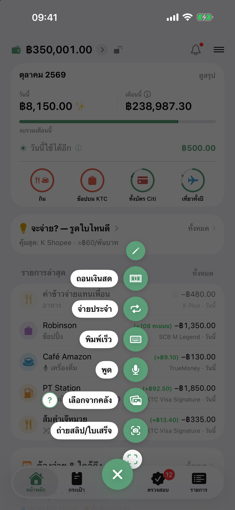
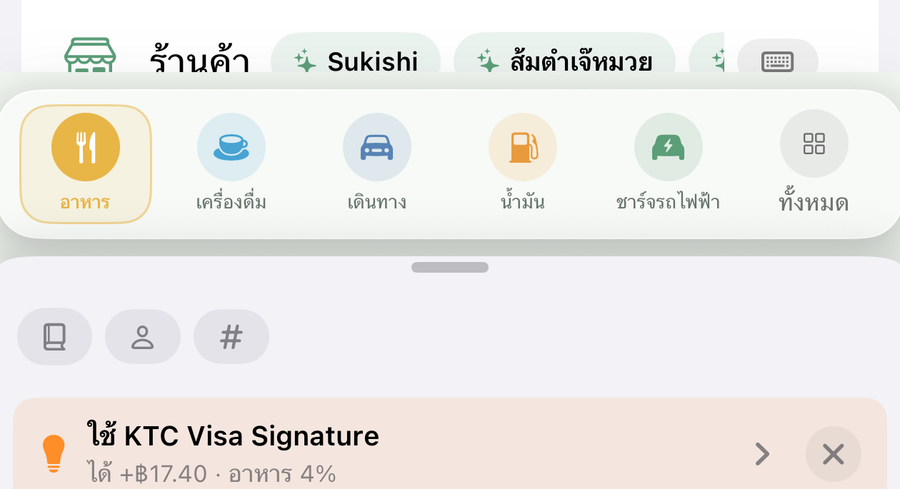
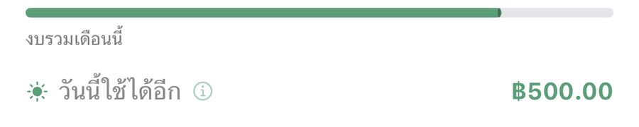
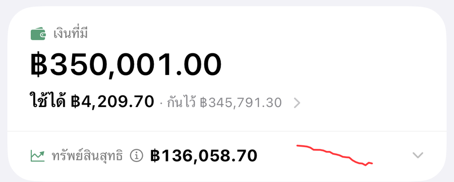
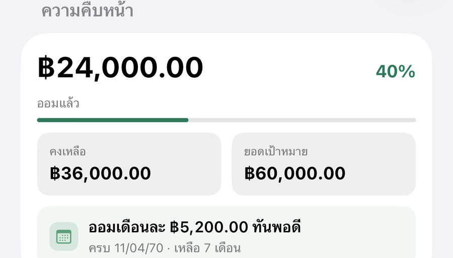
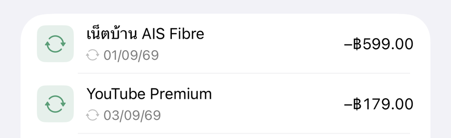

คู่มือใช้งาน
ปรับปรุงล่าสุด 20 ตุลาคม 2569 · ตรงกับเวอร์ชัน 2.10.0
เริ่มต้นใช้งาน#
- ดาวน์โหลด DooSpend จาก App Store
- เปิดแอป — ดูตัวอย่างใน onboarding ไม่กี่หน้า
- เพิ่มบัญชีของคุณ (เงินสด, ธนาคาร, บัตรเครดิต) — เพิ่มเติม → กระเป๋าเงิน
- เริ่มบันทึก — กดปุ่ม "+" กลาง tab bar หรือใช้ tile ลัดบน Dashboard
5 วิธีบันทึกค่าใช้จ่าย#
แตะปุ่ม "+" กลาง tab bar เมนูปุ่มลัดจะกางออก — ค่าตั้งต้นมี 5 วิธีจดข้างล่าง + จ่ายประจำ + ถอนเงินสด · เลือกเองได้สูงสุด 7 ข้อจาก 20 ข้อ (ปุ่ม ✎ บนสุดของเมนู หรือ ตั้งค่า → ปรับแต่งปุ่มลัด) · ทุกวิธีที่ใช้ AI จะไปรอที่แท็บ "ตรวจสอบ" ให้ยืนยันก่อนบันทึกจริงเสมอ

1. ถ่ายสลิป/ใบเสร็จ#
เปิดกล้องถ่ายทีละใบ — สลิปโอน/พร้อมเพย์ หรือใบเสร็จร้าน → AI อ่านยอด ร้าน วันที่ ให้ (นับ 1 ครั้ง quota)
ทางลัด: กดค้างที่ปุ่ม "+" เข้ากล้องถ่ายสลิปทันที ไม่ต้องผ่านเมนู
2. เลือกจากคลัง#
เลือกได้หลายรูปพร้อมกัน — AI จำแนกประเภทให้เองอัตโนมัติ (ไม่ต้องเลือกโหมดเอง):
- สลิปโอน / ใบเสร็จ (รูปละ 1 รายการ)
- ออเดอร์ Shopee / Lazada / TikTok หรือ screenshot ที่มีหลายรายการ → แตกเป็นหลายรายการให้ (สูงสุด 15)
- รูปที่ไม่ใช่การเงิน → ข้ามให้อัตโนมัติ · ในแอปแตะปุ่ม "?" ข้างปุ่มเพื่อดูว่ารับอะไรได้บ้าง
เลือกทีละหลายใบ จะเห็นว่าโหลดถึงใบไหนแล้ว — รูปที่ยังไม่ได้ดาวน์โหลดจาก iCloud ใช้เวลาต่อใบ แถบความคืบหน้าจึงบอกว่า "กำลังโหลด 4 จาก 10" ไม่ใช่ค้างเฉย ๆ
ใบไหนโหลดไม่สำเร็จ (เน็ตหลุด / รูปยังอยู่บน iCloud) จะขึ้นให้ กด "ลองใหม่" เฉพาะใบนั้น ใบที่เข้ามาแล้วไม่ต้องเลือกซ้ำ และไม่มีใบไหนหายไปเงียบ ๆ
3. สแกน QR จดก่อนจ่าย#
สแกน QR ร้าน → preview โชว์ผู้รับ + ยอด + heads-up ให้ตรวจก่อนจ่าย
หรือแตะ "เลือกจากคลัง" เพื่อสแกน QR จากรูปที่บันทึกไว้ (เช่น QR ที่แคปมา)
- DooSpend ช่วย "จด" ไม่ได้จ่ายเงินให้ — คุณไปจ่ายเองในแอปธนาคาร
- กด "จดไว้ก่อนจ่าย" → รายการไปรอที่ "ตรวจสอบ" → ยืนยันอีกครั้งหลังจ่ายจริง
4. พิมพ์เร็ว / 5. พูด#
พิมพ์หรือพูดสั้นๆ เช่น "กาแฟ 75 สตาร์บัคส์" → AI แยกยอด ร้าน หมวด ให้. เสียงแปลงเป็นข้อความบนเครื่อง (ไม่ส่งเสียงออกจากเครื่อง) แล้วส่งเฉพาะข้อความให้ AI
ใส่ชื่อบัญชีในข้อความได้ เช่น "กาแฟ 65 KTC" แอปเลือกบัญชี KTC ให้ · พูด: พูดจบแล้วแอปอ่านให้เอง จากนั้นตรวจและกดบันทึกต่อได้ในชีตเดียว
จดไว้ล่วงหน้า (กันลืม)#
รายการในแอปนี้แปลว่า เกิดขึ้นแล้ว — ลงวันที่ในอนาคตเมื่อไหร่ เงินก็หายจากกระเป๋าทันทีทั้งที่ยังไม่ได้จ่าย งบและยอด "ใช้ได้" ก็เพี้ยนตาม จึงมีทางแยกให้
ตอนเพิ่มรายการ เลือกวันที่เป็นวันข้างหน้า ปุ่มจะเปลี่ยนเป็น "จดไว้ล่วงหน้า" — รายการจะไปพักที่แท็บ ตรวจสอบ แทนที่จะบันทึกจริง
- ยังไม่นับเป็นเงินสักบาท — ยอดบัญชี งบ ยอด "ใช้ได้" กราฟ และรายงาน ไม่ขยับเลยจนกว่าจะกดยืนยัน
- ยังไม่ถึงวัน = เงียบสนิท ไม่ขึ้น badge ไม่เตือน — จดค่าเทอมไว้ล่วงหน้าสองเดือนแล้วเลขค้างสองเดือนคือการทวงที่ทำอะไรไม่ได้
- เหลือ 3 วัน แถวจะขึ้น badge + เตือนนัดแรก · ถึงวันแล้ว เตือนอีกครั้งและกดยืนยันได้
- ก่อนถึงวันกดยืนยันไม่ได้ เพราะยืนยันแล้วเงินขยับทันที — ถ้าจ่ายก่อนกำหนดจริง ใช้ปุ่ม "จ่ายเลย — ลงวันนี้" ซึ่งเลื่อนวันมาเป็นวันนี้ให้ก่อน
- เลยวันแล้วไม่หายไปเอง — ค้างไว้ให้เห็นจนกว่าจะยืนยันหรือทิ้ง
- หัวหน้ารายการมีกลุ่ม "จดไว้ล่วงหน้า" บอกวันที่จริงและนับถอยหลังให้ เช่น "04/09/69 · อีก 2 วัน" — พับเก็บได้ ถ้าไม่อยากเห็น
- แก้อะไรบนแถวแล้วกด "ไว้ก่อน" ของที่แก้อยู่ครบ — กลับมาเปิดใหม่ได้ตามเดิม
ฟีเจอร์เด่นสำหรับบัตรเครดิต#
Best Card Selector#

ตั้ง reward rules ให้บัตรแต่ละใบเอง (หมวด, %, เพดาน, ยอดขั้นต่ำ — ฟรีไม่จำกัด) แล้วกด "บัตรไหนดี?" ดูใบคุ้มสุดก่อนจ่าย. ฟรี ดูคำแนะนำได้ 1 หมวด (เลือกเอง สลับได้เดือนละครั้ง); Pro = ครบทุกหมวด + ระบบอัตโนมัติ: ✨ เด้งบอก "ใช้บัตรนี้ได้ X บาท reward" ให้เองตอนกรอกรายการ + เตือนก่อน reward เต็มเพดาน
วางแผนล้างหนี้ (Avalanche / Snowball)#
เพิ่มเติม → "วางแผนล้างหนี้" หรือ Dashboard tile "วางแผนล้างหนี้" ที่จะโผล่เมื่อมีบัตร 2+ ใบยอดค้าง
- Avalanche — จ่ายดอกเบี้ยสูงสุดก่อน ประหยัดเงินมากสุด
- Snowball — จ่ายยอดน้อยสุดก่อน ปิดบัตรเร็ว สู้ urge อยากเลิกแผน
- ตั้งงบจ่ายต่อเดือน → ดู timeline จะหมดเมื่อไหร่
นำเข้าข้อมูลจากที่อื่น#
ไฟล์ CSV / Excel (ส่งออกจากแอปเก่า — รวมไฟล์ Excel ที่บันทึกจาก Windows) — อ่านบนเครื่องล้วน ไม่ใช้ AI ฟรีเสมอ ไม่จำกัด. เข้าที่ "ย้ายมาจากแอปเก่า" → เลือกไฟล์ → แมปคอลัมน์ → เข้าคิว "ตรวจสอบ". ถ้าไฟล์มีหมวดที่ยังไม่มีในแอป สร้างหมวดใหม่ได้ตรงหน้าจับคู่เลย ไม่ต้องออกไปสร้างก่อน
Statement บัตรเครดิต (PDF) → AI แตกเป็นรายการทั้งใบในครั้งเดียว (รองรับ PDF สแกน + PDF ที่ใส่รหัสผ่าน) → เลือกเฉพาะที่จะนำเข้า. แนะนำใช้ PDF จริงจากอีเมลธนาคาร — อ่านยอดแม่นกว่าสกรีนช็อต. ครั้งแรกฟรีทุกคน ครั้งต่อไปเป็น Pro — ไฟล์ที่ต้องใช้ Pro จะบอกตั้งแต่ในลิสต์ "ตรวจสอบ" และถ้าอัปเกรดทีหลัง กดอ่านต่อจากรายการเดิมได้ ไม่ต้องแชร์ไฟล์ใหม่
ยอดค้างยกมา (เริ่มใช้แอปกลางคัน)#
เพิ่งเริ่มใช้แอปแต่บัตรมียอดค้างอยู่แล้ว → ใส่ "ยอดค้างยกมา" ตอนเพิ่ม/แก้บัตร แอปจะรวมเข้ากับยอดที่จดใหม่ ทำให้ยอดค้างตรงกับใบแจ้งหนี้จริงตั้งแต่เดือนแรก
บิลบัตร — ตัดรอบ · ครบกำหนด · จ่ายบิล#
ตั้งวันตัดรอบและวันครบกำหนดที่หน้าบัตร (แตะบรรทัด "ตัดรอบ … · ครบ …" ใต้ชื่อบัตร) แล้วแอปแบ่งรายการเป็นบิลให้เหมือน statement ของธนาคาร
- รูดถึงวันตัดรอบ (นับวันตัดรอบด้วย) = อยู่ในบิลใบนั้น · รูดหลังวันตัดรอบ = ไปบิลใบถัดไป
- แถวบัตรในหน้ากระเป๋า บรรทัดล่างบอกบิลที่ตัดรอบแล้ว: "บิล ฿X · ครบ 25 ต.ค." · จ่ายไปบางส่วน = "เหลือจ่าย ฿X" · เลยวันครบ = "เลย N วัน" สีแดง · จ่ายครบแล้วมีรูดใหม่ = "ไม่มีบิลเก่าค้าง · ตัดรอบ …" · จ่ายเกิน = "เครดิตคืน"
- หน้าบัตร มีแถว "ต้องจ่ายรอบนี้" พร้อมปุ่มจ่าย — กดแล้วชีตจดเติมยอดให้ · การจ่ายบิลคือโอนจากบัญชีไปบัตร ไม่นับเป็นรายจ่ายซ้ำ (ของที่รูดนับไปแล้วตอนรูด)
- ผ่อนบนบัตรกันวงเงินแบบธนาคาร — "ใช้ได้" = วงเงิน − ยอดค้าง − เงินต้นผ่อนที่ยังไม่ถึงงวด · หน้าบัตรบอก "รวมผ่อนคงเหลือ ฿X"
- รูดเกินวงเงิน แอปบอกในชีตจด แต่ไม่ห้ามบันทึก
- ยอดบิลชุดเดียวกันนี้ขึ้นที่การ์ด "ต้องจ่าย" · กระดิ่ง · แจ้งเตือนวันครบกำหนด
ยอดบัตรในแอปไม่ตรงกับธนาคาร (ดอกเบี้ย · ค่าธรรมเนียม · ค่าปรับ)#
ธนาคารหักดอกเบี้ยหรือค่าธรรมเนียมเข้าบัตรโดยที่คุณไม่ได้รูดเอง แอปจึงไม่รู้ · ปรับให้ตรงได้ดังนี้:
- จดรายจ่ายใหม่ เลือกบัตรใบนั้น ใส่ยอดเท่าส่วนต่างที่เห็นใน statement · เลือกวันที่ตามที่ธนาคารหัก (ส่วนใหญ่คือวันตัดรอบ)
- แตะ "เพิ่มเติม" → เปิด "ไม่นับในค่าใช้จ่าย"
ผล: ยอดค้างบัตรและบิลรอบนี้ตรงกับธนาคาร · แต่ไม่ไปรวมในยอด "ใช้ไป" และงบ เพราะไม่ใช่ของที่คุณซื้อ · ถ้าอยากนับดอกเบี้ยเป็นค่าใช้จ่ายด้วย ก็ไม่ต้องเปิดสวิตช์นี้
ทริก: ตั้งหมวด "ดอกเบี้ย/ค่าธรรมเนียม" แล้วเปิด "รายการหมวดนี้ไม่นับในค่าใช้จ่าย" ไว้ที่หมวด (ดู ไม่นับในค่าใช้จ่าย) ครั้งต่อไปเลือกหมวดนี้ก็ไม่นับให้เอง
กดเงินสดจากบัตร#
จดเป็นรายการโอน จากบัตรไปบัญชีที่รับเงิน (ธนาคาร/วอลเล็ต) — ยอดนั้นเข้ายอดค้างของบัตรอย่างที่อยู่บนใบแจ้งหนี้จริง และไปโผล่ในบิลรอบที่ตรงกับวันที่กด · ไม่ถูกนับเป็น "ค่าใช้จ่าย" เพราะเงินยังอยู่กับคุณ แค่ย้ายที่ · ดอกกดเงินสดแอปไม่คิดให้ (ธนาคารคิดคนละอัตรากับการรูดซื้อของ) — พอธนาคารเรียกเก็บ ค่อยจดยอดดอกเป็นรายการแยก
แจ้งเตือนวันครบกำหนด#
ระบบ schedule local notification 5 จังหวะอัตโนมัติ (7d/3d/1d/วันครบ/หลัง 1d) ปิด/เปิดได้ใน เพิ่มเติม → "แจ้งเตือนบัตรเครดิต"
วงเงินร่วม (บัตรหลัก + บัตรเสริม)#
บัตรเสริมหรือบัตรที่แชร์วงเงินก้อนเดียวกับบัตรหลัก → เปิด "ใช้วงเงินร่วมกับบัตรอื่น" ในหน้าแก้ไขบัตรใบที่มาร่วม แล้วเลือกบัตรหลัก. แอปจะคิดยอดใช้รวมทั้งกลุ่มเทียบวงเงินก้อนเดียว และเตือนเมื่อยอดรวมใกล้ (≥85%) หรือเต็มวงเงิน แทนที่จะมองทีละใบ (ที่จะรายงานต่ำกว่าจริง)
สมุด — จดร่วม / หารกับเพื่อน#
สมุด = สมุดบัญชีร่วมสำหรับแบ่งค่าใช้จ่ายกับครอบครัว เพื่อน หรือทริปกลุ่ม มี 2 แบบ:
- สมุดส่วนตัว — จัดกลุ่มรายการในบัญชีคุณเพื่อดูสรุป อยู่ในเครื่อง + iCloud ส่วนตัวของคุณ
- สมุดที่แชร์ — เชิญคนอื่นเข้าร่วม จดพร้อมกันแบบเรียลไทม์ ทุกคนเห็นรายการชุดเดียวกัน
สร้างสมุดที่แชร์ + เชิญเพื่อน#
การสร้างสมุดที่แชร์เป็นฟีเจอร์ Pro — ส่วนการเข้าร่วมสมุดที่เพื่อนชวน ใช้ได้ฟรีเสมอ
- tab "สมุด" → "+" → ตั้งชื่อ + ไอคอน/สี → เปิดสวิตช์ "แชร์กับคนอื่นได้"
- เปิดสมุด → เมนู "⋯" → "เชิญเพื่อน" → แชร์เข้า LINE / คัดลอกลิงก์ / แชร์ลิงก์… (ในเมนูเดียวกันมี "วิธีให้เพื่อนเข้าร่วม" อธิบายขั้นตอนให้)
- เพื่อน (คนละ Apple ID) แตะลิงก์ → เปิดในแอปแล้วเข้าร่วมอัตโนมัติ · ถ้าแตะไม่ติด ให้ก๊อปลิงก์ → แท็บสมุด → "+" → "เข้าร่วมด้วยลิงก์" → วางลิงก์
ถ้าซิงค์ช้า/ไม่ขึ้น — ลองสลับเป็นเน็ตมือถือแล้วดึงรีเฟรชใหม่ (WiFi บางที่บล็อกการซิงค์ของ iCloud). เชิญได้เฉพาะสมุดที่เปิดแชร์ — สมุดส่วนตัวแชร์ไม่ได้
เพิ่มรายการในสมุดที่แชร์#
- เปิดสมุด → "+" → ใส่จำนวนด้วยเครื่องคิดเลข + เลือกหมวด
- เลือก "ใครจ่าย" — ถ้าเพื่อนเป็นคนจ่ายแทน เลือกชื่อเขา
- ถ้าคุณเป็นคนจ่าย เลือก "จ่ายจากบัญชี" ได้ — เงินจะหักจากบัญชีส่วนตัวคุณจริง (เต็มจำนวนที่ฟรอนต์) หรือเลือก "ไม่หักบัญชี" เพื่อแยกทริปออกจากเงินส่วนตัว
- save → รายการ sync ขึ้นให้ทุกคนเห็น (หน้าเพิ่มรายการใช้สีของสมุดนั้นๆ จะได้รู้ว่ากำลังจดลงสมุดไหน)
แบ่งกับใคร (เลือกคนหารบิล)#
แต่ละบิลเลือกได้ว่าหารกับใครบ้าง ค่าเริ่มต้น = หารเท่ากันทุกคน; ในฟอร์มเพิ่มรายการแตะ "แบ่งกับ" แล้วติ๊กเฉพาะคนที่ร่วมบิลนั้น (ตัวเองร่วมเสมอ) — settlement คำนวณให้ตามนั้น
สรุปสมุด — "ใครติดใคร"#
การ์ด settlement โผล่ขึ้นมาเองเมื่อมี 2+ คนมีรายการ โชว์:
- ค่าเริ่มต้นหารเท่ากัน แต่เลือกได้ว่าบิลไหนหารกับใคร แล้วแอปคำนวณ minimum transfers ให้
- รายการโอนขั้นต่ำ "A → B ฿X"
- Per-person summary "เกิน / ขาด / พอดี"
นำตัวเลข transfer ไป PromptPay โอนหากันเองตามนั้น — DooSpend ไม่ได้ทำธุรกรรม
แชร์สรุปทริป + ให้เพื่อนสแกนจ่ายคืน#
จบทริปแล้วกด "แชร์สรุปทริป" → ได้การ์ดสรุปใครติดใคร พร้อม PromptPay QR ของคุณ ส่งเข้ากลุ่มแชท เพื่อนสแกน QR โอนคืนได้เลย (ครั้งแรกจะให้ตั้งเลขพร้อมเพย์ก่อน). DooSpend ไม่ได้ทำธุรกรรม เป็นแค่ตัวช่วยสรุป + สร้าง QR
ออกจากสมุด / ลบสมุด#
- ผู้เข้าร่วม ปัดซ้าย → "ออกจากสมุด": สมุดหายจากเครื่องคุณ แต่เจ้าของและคนอื่นยังมีครบ
- เจ้าของ ปัดซ้าย → "ลบถาวร": ลบรายการทั้งหมด ทุกคนที่แชร์ด้วยจะหายไปด้วย กู้คืนไม่ได้
ข้อมูลในสมุด#
- sync ผ่าน Apple iCloud (CKShare) — ไม่มี server ของ DooSpend
- เฉพาะคนที่ได้รับเชิญเท่านั้นที่เห็น เจ้าของยุติ share ได้ทันที
- อัปเดตแบบเรียลไทม์ (silent push) — ถ้าไม่เห็นทันทีให้สลับออก-เข้าแอปเพื่อ refresh
เพื่อใคร — จ่ายให้ใคร#
"เพื่อใคร" เป็นแกนที่ตั้งฉากกับหมวด ใช้ตอบคำถามที่หมวดตอบไม่ได้ เช่น "เดือนนี้จ่ายเพื่อลูกไปเท่าไหร่" — ค่าเทอมลูกยังอยู่หมวด "การศึกษา" แต่ติดป้ายเพื่อใคร = ลูก
- ตั้งรายชื่อที่ เพิ่มเติม → "เพื่อใคร / คนที่ดูแล" (พ่อ, แม่, ลูก, ตัวเอง…)
- ตอนจดรายการ เลือกได้ในแถว "เพื่อใคร" — หรือเพิ่มชื่อใหม่ได้ทันทีจากในฟอร์ม ไม่ต้องออกไปตั้งก่อน
- ในหน้ารายการ กรองหรือแบ่งกราฟตาม "เพื่อใคร" ได้เหมือนหมวด
- เลือกหลายรายการพร้อมกันแล้วใส่ "เพื่อใคร" ทีเดียวได้
ต่างจาก "ใครจ่าย" ในสมุดที่แชร์ — อันนั้นคือคนที่ควักเงิน ส่วนอันนี้คือคนที่เงินถูกใช้ไปเพื่อ
งบประมาณ & รอบเดือนการเงิน#
ตั้งงบรายเดือน/รายหมวด และตั้ง "วันเริ่มรอบเดือน" ให้ตรงวันเงินเดือนออก (เช่น ทุกวันที่ 25) — สรุป/งบทั้งหมดยึดรอบนี้แทนปฏิทิน 1–สิ้นเดือน
เลือกงบขึ้นหน้าหลัก (ดาว)#
งบรวมรายเดือน (ทุกหมวด ทุกบัญชี) เป็นแถบยาวบนหน้าหลัก และได้ดาวให้เองตั้งแต่สร้าง · งบอื่นแตะ ⭐ ที่แถวงบในหน้างบ (หรือเมนู ⋯ ในจอรายละเอียดงบ) เพื่อขึ้นเป็นวงกลมได้อีก 4 งบ
- ใต้แถบมีบรรทัด "งบรวม · วันนี้ใช้ได้อีก" — มาจากงบรวมรายเดือนใบเดียว ไม่ได้รวมวงกลม (Pro)
- ไม่ได้ติดดาวใบไหนเลย = ไม่มีงบบนหน้าหลัก · ถอดดาวงบรวมได้ถ้าไม่อยากเห็นแถบ
- วงกลม: กลางวงคือ % ที่ใช้ไป · ใต้วงคือชื่องบ และยอด "วันละ ฿X" (Pro) หรือ "เหลือ ฿X" · ใช้เกินแล้วขึ้น "เกิน ฿X" · ถ้ามีงบที่ผูกบัญชี ทุกวงจะมีบรรทัดบอกบัญชี ("บน K Plus" / "ทุกบัญชี")
- แตะแถบหรือวงกลม เปิดรายละเอียดของงบนั้นเลย · กดย้อนกลับไปที่ลิสต์งบ
งบหมวดบนบัญชีเดียว#
ตอนสร้างงบ เลือกบัญชีก่อน แล้วค่อยเลือกหมวด — เช่น "อาหาร + คาเฟ่ บน KTC" นับเฉพาะรายจ่ายสองหมวดนั้นที่จ่ายด้วย KTC
- หมวดเดียวกันตั้งงบได้คนละบัญชี (อาหารบน KTC กับอาหารบนกสิกร) · ตั้ง "อาหาร ทุกบัญชี" คู่กันได้ด้วย — งบบัญชีเป็นส่วนย่อยของงบทุกบัญชี รายจ่ายจึงนับทั้งสองใบ
- เลือกหมวดเป็นรายการติ๊ก — ติ๊ก "ทุกหมวด" หรือติ๊กครบทุกหมวด = นับทุกหมวด รวมหมวดที่เพิ่มทีหลังและรายการที่ไม่ระบุหมวด · เอาออกบางหมวด = นับเฉพาะที่ติ๊ก
- หมวดเดียวกันบนบัญชีเดียวกันอยู่ได้งบเดียว (หมวดที่ถูกจองแล้วขึ้นเทา) · งบไม่มีหมวด + บัญชีเดียวกัน + คาบเดียวกัน ตั้งซ้ำไม่ได้
- ลบบัญชี = งบที่ผูกบัญชีนั้นถูกลบด้วย กล่องยืนยันบอกชื่องบก่อนกด (ไม่ปล่อยให้งบกลายเป็น "ทุกบัญชี" เงียบ ๆ)
จอรายละเอียดงบ#
- กราฟใช้สะสม เทียบกับเส้นงบตลอดรอบ — รายสัปดาห์/รายเดือนเป็นรายวัน รายปีเป็นรายเดือน
- ใช้จ่ายตามหมวด พร้อม % ของยอดใช้ไป (ยอดทุกหมวดรวมกันเท่ายอดใช้ไปพอดี) · แตะหมวดเพื่อดูเฉพาะรายการของหมวดนั้น แตะซ้ำเพื่อดูทั้งหมด
- แถวงบในหน้างบและการ์ดสรุปในจอรายละเอียดบอก "วันละ ฿X" — ยอดที่ใช้ได้ต่อวันจนจบรอบ (Pro) · คิดจากยอดที่ใช้ไปก่อนวันนี้ ใช้วันนี้แล้วเลขวันนี้ไม่ขยับ พรุ่งนี้ค่อยเกลี่ยใหม่
- รายการที่ติ๊ก "ไม่นับในค่าใช้จ่าย" ยังอยู่ในลิสต์เป็นแถวจาง แต่ไม่เข้ายอดใช้ไปและยอดของวัน
- ขีด "วันนี้" บนแถบและวงของงบ บอกว่าผ่านมาถึงไหนของรอบแล้ว · หน้ารายละเอียดบอกช่วงวันที่ของทุกคาบ
ไม่นับในค่าใช้จ่าย (แยกหนี้/ผ่อน)#
ยอดจ่ายหนี้/ผ่อนก้อนใหญ่มักกลบค่าใช้จ่ายจริง ตั้ง "ไม่นับในค่าใช้จ่าย" ให้ยอดพวกนี้ไม่ไปรวมในสรุปเดือน/งบได้ — ตั้งได้ 2 ระดับ:
- ทั้งหมวด — แก้หมวด (เช่น "ผ่อนบ้าน" / "จ่ายหนี้") เปิด "รายการหมวดนี้ไม่นับในค่าใช้จ่าย" → รายการที่จดใหม่ในหมวดนั้นไม่นับให้เอง (รายการเก่าไม่เปลี่ยนย้อนหลัง)
- รายรายการ — ในฟอร์มจด แตะ "เพิ่มเติม" → เปิด "ไม่นับในค่าใช้จ่าย" เฉพาะรายการนั้น
เงินยังถูกหักจากบัญชีตามจริง (เงินออกจากกระเป๋าจริง) และถ้ารูดบัตรจ่ายก็ ยังได้แต้ม/เงินคืนปกติ — แค่ไม่รวมในยอด "ค่าใช้จ่าย" และไม่นับในงบไหนเลย (งบรวม งบหมวด หรืองบบัญชี). รายการที่ไม่นับจะมีเครื่องหมาย − และจางลงในลิสต์. บน Dashboard ยอด "วันนี้/เดือนนี้" ตัดออกเสมอ; หน้า "รายการ" โชว์ไว้เป็นแถวจาง ถ้าไม่อยากเห็น กดปุ่มกรอง (กรวย) → เปิด "ซ่อนรายการที่ไม่นับ" (ค้นหาเจอทุกรายการเสมอ)
อยากเห็นว่า "ถ้านับหมดจะเป็นเท่าไหร่" — จอสรุปมีสวิตช์ "รวมรายการที่ไม่นับ" อยู่ใต้การ์ด/ใต้ legend เปิดดูชั่วคราวได้ · ไม่จำค่า ออกจากจอแล้วกลับมาเป็นปิดเสมอ (จำค่าไว้ = สองความจริงในแอปเดียว แล้วสกรีนช็อตที่ส่งต่อก็อ่านผิด) · เปิดแล้วกราฟ (โดนัท/วาฟเฟิล) แยกเงินก้อนนั้นเป็นก้อน "ไม่นับในค่าใช้จ่าย" สีอำพันตรึงท้าย legend ไม่กลืนเข้าหมวดของมัน — จะได้รู้ว่าส่วนต่างมาจากไหน · ปิดสวิตช์ = ก้อนนั้นไม่อยู่ในกราฟเลย (กราฟตรงกับการ์ดเสมอ) · หน้าหลัก งบ และสมุดไม่มีสวิตช์นี้โดยตั้งใจ
ช่อง "เดือนนี้" บนหน้าหลัก — ใช้ไป · สุทธิวันนี้ · สุทธิสิ้นเดือน#
แตะ ⓘ ข้างคำว่า "เดือนนี้" บนการ์ดสรุป เลือกได้ว่าจะให้ช่องนี้โชว์อะไร:
- ใช้ไปเดือนนี้ — ยอดจ่ายของเดือนการเงินนี้ (แบบเดิม)
- สุทธิวันนี้ — รับ − จ่าย ที่เกิดขึ้นแล้วถึงวันนี้ (ฟรี) · โอนระหว่างบัญชีและรายการ "ไม่นับในค่าใช้จ่าย" ไม่เข้า
- สุทธิสิ้นเดือน (Pro) — สุทธิวันนี้ บวกรายการที่ตั้งไว้ซึ่งยังไม่เกิดในเดือนนี้: รายรับประจำ (เช่น เงินเดือน) · รายจ่ายประจำ · งวดผ่อน · ดอกเบี้ยของงวดหนี้ · รายการจดล่วงหน้า · เงินที่จะได้คืน
ชีต ⓘ มีไทม์ไลน์ของเดือน (เส้นสุทธิสะสม · จุดกลวงสีส้ม = ที่ตั้งไว้) และบอกด้วยว่าอะไรไม่ได้นับ เช่น แถวในตรวจสอบที่ยังไม่ยืนยัน · แอปไม่เดาค่าใช้จ่ายรายวันในอนาคต ยอดสิ้นเดือนจึงมาจากของที่คุณตั้งไว้เท่านั้น · ยิ่งตั้งรายรับประจำ/รายจ่ายประจำไว้ครบ ยอดนี้ยิ่งใกล้ความจริง ใช้วางแผนเงินให้ถึงสิ้นเดือนได้ · จ่ายบิลบัตรเครดิตไม่นับซ้ำ เพราะของที่รูดนับเป็นรายจ่ายไปแล้วตอนรูด
ตัวอย่าง — เดือนนี้รับฟรีแลนซ์ +฿15,000 · ใช้ไปแล้ว ฿7,200 · ที่ตั้งไว้แต่ยังไม่ถึง: เงินเดือน +฿30,000 · ค่าเช่า ฿6,000 · ค่าเน็ต ฿599 · Netflix ฿419
- สุทธิวันนี้ +฿7,800 = รับ 15,000 − ใช้ไป 7,200
- สุทธิสิ้นเดือน +฿30,782 = 7,800 + เงินเดือน 30,000 − ค่าเช่า 6,000 − ค่าเน็ต 599 − Netflix 419
ทุกเลขมาจากสถานการณ์เดียวกับ ตัวอย่างเดียว ไล่ทุกเลข
วันนี้ใช้ได้อีกเท่าไหร่ (คุมงบรายวัน)#

เมื่อตั้งงบรวมรายเดือนไว้ แอปเกลี่ยงบทั้งเดือนเป็นรายวันตามรอบเดือนการเงินของคุณ แล้วบอกบน Dashboard ว่า "วันนี้ใช้ได้อีก ฿X" และมีแจ้งเตือนยอดทุกเช้า (ปิด/เปิดได้ใน เพิ่มเติม → แจ้งเตือน). ตัวเลขคิดสดตามที่ใช้จริงวันนี้ ใช้เกินส่วนของวันนี้จะขึ้นเป็น "วันนี้ใช้เกินมา ฿X" · ถ้างบทั้งรอบไม่พอแล้ว (งบ − บิล − ที่ใช้เองทั้งรอบ ติดลบ) จะขึ้น "งบรอบนี้ไม่พอ ฿X" = ยอดที่ขาด · แตะ ⓘ ดูทีละบรรทัดว่าเลขบนหัวมาจากไหน. ตัวเลขรายวันนี้เป็นฟีเจอร์ Pro — ผู้ใช้ฟรียังเห็นแถบงบและยอด "เหลือ" ของเดือนนี้ได้ตามปกติ
หักบิลก่อนหารวัน — วันละ = (งบ − บิลที่ครบในรอบของงบ − ที่ใช้เองก่อนวันนี้) ÷ วันที่เหลือ · บิลคือ รายจ่ายประจำ · งวดผ่อน · ดอกหนี้ · รายการจดล่วงหน้า ที่ครบในรอบนี้ (จ่ายแล้วใช้ยอดจริง ยังไม่จ่ายใช้ยอดที่ตั้งไว้) ค่าเช่าที่จะตัดปลายเดือนจึงไม่ถูกนับเป็นเงินที่ใช้ได้ตั้งแต่ต้นเดือน · แตะ ⓘ บนหน้าหลักเพื่อดูสูตรและรายการบิล · บิลรวมกันเกินงบแล้วจะไม่มีตัวเลข ขึ้นว่า "บิลที่ตั้งไว้เกินงบแล้ว" แทน · แถบงบและยอดใช้ไปไม่เปลี่ยน
ตัวอย่าง — งบรวม ฿20,000 · วันนี้ 22 ต.ค. เหลือ 10 วัน (นับวันนี้) · บิลที่ครบในเดือนนี้ ฿9,018 (ค่าไฟ 2,000 จ่ายแล้ว + ค่าเช่า 6,000 + ค่าเน็ต 599 + Netflix 419) · ใช้เองก่อนวันนี้ ฿5,000 (อาหาร 3,000 + รูดบัตร 2,000) · วันนี้ใช้ไปแล้ว ฿200
- ส่วนของวันนี้ = (20,000 − บิล 9,018 − ใช้เอง 5,000) ÷ 10 = ฿598.20
- วันนี้ใช้ได้อีก ฿398.20 = 598.20 − ที่ใช้วันนี้ 200
- พรุ่งนี้หารใหม่ด้วยวันที่เหลือ 9 วัน · ใช้วันนี้น้อยกว่าส่วนของวัน ส่วนที่เหลือจะเกลี่ยไปวันข้างหน้าเอง
ทุกเลขมาจากสถานการณ์เดียวกับ ตัวอย่างเดียว ไล่ทุกเลข
นับบิลในงบนี้ (ต่องบ)#
ทุกงบมีสวิตช์ "นับบิลในงบนี้" — ในชีตสร้าง/แก้งบ ใต้ยอด และในจอรายละเอียดงบ (แตะ ⓘ ข้างสวิตช์เพื่อดูว่าเปิด/ปิดต่างกันยังไง) · เปิดเป็นค่าตั้งต้น (เหมือนงบเดิมทุกใบ): บิลเข้างบนี้และถูกหักไว้ก่อนหารวัน · ปิด = งบนี้นับแค่ที่ใช้เอง — จ่ายบิลไม่เข้างบ และไม่หักบิลก่อนหารวัน เหมาะกับคนที่อยากคุมเฉพาะเงินใช้จ่ายทั่วไป · งบรวมบนหน้าหลักที่ปิดสวิตช์นี้จะมีคำว่า "· ไม่นับบิล" ต่อท้ายชื่อ เพราะยอด "เดือนนี้" ข้างบนยังนับทุกยอด
ตัวอย่าง — งบรวมเดือนละ ฿9,000 · ค่าเช่า ฿6,000 ตัดวันที่ 25 · วันนี้ 20 ต.ค. (เหลือ 12 วัน นับวันนี้) · ใช้เองไปแล้ว ฿300
| เปิด (ค่าตั้งต้น) | ปิด | |
|---|---|---|
| วันนี้ใช้ได้อีก | (9,000 − ค่าเช่า 6,000 − 300) ÷ 12 = ฿225/วัน | (9,000 − 300) ÷ 12 = ฿725/วัน |
| วันที่ 25 จ่ายค่าเช่า | วันนี้ใช้ได้อีกไม่ขยับ (หักไว้ตั้งแต่ต้นแล้ว) · แถบงบนับค่าเช่า | ค่าเช่าไม่เข้างบนี้เลย · แถบงบไม่ขยับ |
| เหมาะกับ | งบรวมที่อยากรู้ว่าหลังจ่ายบิลทั้งเดือนแล้วเหลือใช้วันละเท่าไหร่ | งบที่อยากคุมเฉพาะของกินของใช้ ไม่สนบิล |
เปิดแล้วต้นเดือนตัวเลขจะดูน้อย เพราะค่าเช่าที่ยังไม่ถึงวันจ่ายถูกกันไว้แล้ว — นี่คือเงินที่ใช้ได้จริงหลังจ่ายบิล · ปิดแล้วต้นเดือนดูเหลือเยอะ แต่บิลไม่อยู่ในงบนี้ ต้องจำเองว่ามีบิลรออยู่
งบหลายใบ เมื่อหมด Pro#
ผู้ใช้ฟรีนับและแก้ได้ 1 งบ (ใบแรกที่สร้าง). ถ้าเคยตั้งงบไว้หลายใบตอนเป็น Pro ใบอื่นจะหยุดนับ — ยังอยู่ในหน้างบเป็นแถวสีเทา "หยุดนับแล้ว" ไม่มีแถบ ไม่เตือน และไม่ขึ้นหน้าหลัก แต่ไม่ถูกลบ (ลบเองได้). กลับมาเป็น Pro เมื่อไหร่ ทุกใบนับต่อทันที เพราะรายการไม่เคยหาย
ตัวเลขในแอป — เลขไหนตอบคำถามอะไร#
แอปมีตัวเลขหลายตัวที่ชื่อคล้ายกัน แต่ละตัวตอบคนละคำถาม — สรุปไว้ที่เดียว
| ตัวเลข | อยู่ที่ | ตอบคำถาม | คิดยังไง |
|---|---|---|---|
| เงินที่มี | กระเป๋า · เลขใหญ่ | ตอนนี้มีเงินอยู่ในบัญชีเท่าไหร่ | ยอดทุกบัญชีที่ไม่ใช่บัตรเครดิต (รวมบัญชีเป้าออม) |
| เงินที่ใช้ได้ | กระเป๋า · บรรทัด "ใช้ได้ · กันไว้" (Pro) · ชีตกันไว้ | ใช้ได้เท่าไหร่ โดยไม่แตะเงินที่มีภาระ | เงินที่มี − เป้าออม − ค้างบัตรและหนี้ยืม − บิลที่ยังต้องจ่ายเดือนนี้ (Pro) · ไม่บวกรายรับที่ยังไม่เข้า |
| ทรัพย์สินสุทธิ | กระเป๋า · ใต้เงินที่มี + กราฟ | ถ้าปิดหนี้ทุกก้อนวันนี้ จะเหลือเท่าไหร่ | ทุกบัญชี − ค้างบัตร − ยืมมา + ให้ยืม · เป้าออมไม่หัก (เงินออมก็เงินคุณ) |
| ใช้ไป | หน้าหลัก · ช่องเดือนนี้ | เดือนนี้จ่ายไปเท่าไหร่ | รายจ่ายของเดือนการเงินนี้ · รูดบัตรนับวันที่รูด ไม่ใช่วันจ่ายบิล |
| สุทธิวันนี้ | หน้าหลัก · ช่องเดือนนี้ | เดือนนี้ถึงตอนนี้ เงินเพิ่มหรือลด | รับ − จ่าย ที่จดแล้ว · เริ่ม 0 ทุกต้นเดือน |
| สุทธิสิ้นเดือน (Pro) | หน้าหลัก · ช่องเดือนนี้ | ถ้าเป็นไปตามที่ตั้งไว้ เดือนนี้จะจบบวกหรือลบ | สุทธิวันนี้ + ของที่ตั้งไว้ที่ยังไม่เกิด (รายรับ/รายจ่ายประจำ · งวดผ่อน · จดล่วงหน้า) |
| วันนี้ใช้ได้อีก (Pro · ต้องมีงบรวม) | หน้าหลัก | วันนี้ใช้ได้อีกเท่าไหร่ ตามงบที่ตั้งเอง | (งบ − บิลในรอบ − ใช้เองก่อนวันนี้) ÷ วันที่เหลือ − ใช้วันนี้ · ไม่ดูเงินในบัญชีเลย |
วันนี้ใช้ได้อีก ≠ เงินที่ใช้ได้ — ตัวแรกมาจากงบที่คุณตั้งเอง (ตั้งงบเกินเงินจริงได้ แอปไม่รู้ว่าในบัญชีมีเท่าไหร่) · ตัวหลังมาจากเงินจริงในบัญชี หักภาระ (ไม่รู้ว่าคุณตั้งงบไว้เท่าไหร่) · ดูคู่กันได้: งบบอกว่า "ควร" ใช้วันละเท่าไหร่ ส่วนเงินที่ใช้ได้บอกว่า "มี" ให้ใช้เท่าไหร่
ทำไมเงินที่ใช้ได้ไม่บวกเงินเดือนที่จะเข้า — เงินที่ยังไม่เข้ายังใช้ไม่ได้ และถ้าบวกเข้าไป ตัวเลขจะกลายเป็นสุทธิสิ้นเดือนในรูปยอดคงเหลือ ซึ่งมีอยู่แล้วบนหน้าหลัก
การ์ดกระเป๋า — เงินที่มี · ใช้ได้ · กันไว้#

- เงินที่มี = เงินในบัญชีเงินสด ธนาคาร และ e-wallet รวมกัน
- กันไว้ = เป้าออมที่จองไว้ + ค้างบัตรและหนี้ยืม + (Pro) บิลที่ยังต้องจ่ายถึงสิ้นเดือนการเงิน (ไม่รวมบิลที่ตัดบัตร เพราะนับในค้างบัตรแล้ว · ไม่คิดรายรับที่จะเข้า)
- ใช้ได้ = เงินที่มี − กันไว้ · แตะ › เปิดชีตแยกยอด ทุกก้อนมีแถวของตัวเอง ก้อนที่เป็น ฿0 แสดงจาง
- Pro เลือกได้ว่าตัวใหญ่เป็นเงินที่มีหรือเงินที่ใช้ได้ และเปิด/ปิดบรรทัดรอง — เมนู ⋯ บนหน้ากระเป๋า หรือ ตั้งค่า → ปรับแต่งหน้ากระเป๋า
- ฟรี การ์ดแสดงเงินที่มี · ชีตกันไว้ยังเปิดดูได้ แถวบิลบอกจำนวนบิลแต่ไม่บอกยอด
อะไรขยับเลขไหน#
↓ ลด · ↑ เพิ่ม · – ไม่ขยับ · เงินที่ใช้ได้ = แบบ Pro (หักบิลเดือนนี้)
| ทำอะไร | วันนี้ใช้ได้อีก | เงินที่ใช้ได้ | สุทธิวันนี้ | สุทธิสิ้นเดือน | ทรัพย์สินสุทธิ |
|---|---|---|---|---|---|
| จดรายจ่าย (เงินสด/บัญชี) | ↓ | ↓ | ↓ | ↓ | ↓ |
| รูดบัตรเครดิต | ↓ | ↓ (ค้างบัตรเพิ่ม) | ↓ | ↓ | ↓ |
| โอนระหว่างบัญชี · กดเงินสด · จ่ายบิลบัตร | – | – | – | – | – |
| ออมเข้าเป้า | – | ↓ (กันไว้) | – | – | – |
| รายการ "ไม่นับในค่าใช้จ่าย" | – | ↓ | – | – | ↓ (เงินออกจริง) |
| ตั้งบิลใหม่ · จดล่วงหน้า (ในเดือนนี้) | ↓ (หักบิลก่อนหารวัน) | ↓ | – | ↓ | – |
| ยืนยันบิล/งวดผ่อน/จดล่วงหน้าที่ตั้งไว้ | – | – (กันไว้แล้ว) · ตัดบัตร = ↓ | ↓ | – | ↓ |
| รายรับประจำเข้า (ตั้งไว้แล้ว) | – | ↑ | ↑ | – | ↑ |
| ยืมเงินมา | – | – | – | – | – |
| ให้ยืม | – | ↓ | – | – | – |
| ลบรายการ | ย้อนสิ่งที่รายการนั้นเคยทำ | ||||
วันนี้ใช้ได้อีกยังขยับเองทุกวันแม้ไม่ทำอะไร — เพราะหารด้วยวันที่เหลือ ซึ่งลดลงทุกวัน
ตัวอย่างเดียว ไล่ทุกเลข#
วันนี้ 22 ต.ค. · เดือนเริ่มวันที่ 1 · บัญชีกสิกร ฿40,000 · งบรวม ฿20,000 · เป้าเที่ยวกันไว้ ฿5,000 · เดือนนี้: รับฟรีแลนซ์ +฿15,000 · อาหาร ฿3,000 · ค่าไฟ ฿2,000 (บิลประจำ จ่ายแล้ว) · รูดบัตร ฿2,000 · วันนี้ข้าว ฿200 · ที่ตั้งไว้: ค่าเช่า ฿6,000 (23) · ค่าเน็ต ฿599 (24 · ตัดบัตร) · เงินเดือน +฿30,000 (25) · Netflix ฿419 (28)
- ใช้ไป ฿7,200 = 3,000 + 2,000 + 2,000 + 200
- สุทธิวันนี้ +฿7,800 = รับ 15,000 − ใช้ไป 7,200
- สุทธิสิ้นเดือน +฿30,782 = 7,800 + (30,000 − 6,000 − 599 − 419)
- วันนี้ใช้ได้อีก ฿398.20 = (20,000 − บิล 9,018 − ใช้เอง 5,000) ÷ 10 วัน − 200
- เงินที่มี ฿49,800 = 40,000 + 15,000 − 3,000 − 2,000 − 200 (รูดบัตรยังไม่ออกจากบัญชี)
- เงินที่ใช้ได้ ฿36,381 = 49,800 − เป้า 5,000 − ค้างบัตร 2,000 − บิลที่ยังต้องจ่าย (ค่าเช่า 6,000 + Netflix 419) · ค่าเน็ตตัดบัตรไม่หัก · คนฟรีเห็น ฿42,800 (ไม่หักบิล)
- ทรัพย์สินสุทธิ ฿47,800 = 49,800 − ค้างบัตร 2,000 · เป้าออมไม่หัก
สกุลเงินของสมุด#
ตั้งได้ว่าสมุดนี้เป็นเงินสกุลไหน — ทั้งแอปเปลี่ยนตามทันที ทั้งยอด สัญลักษณ์ และจำนวนทศนิยม (เยนกับวอนไม่มีหน่วยย่อย จึงไม่โชว์ทศนิยมเลย) เข้าที่ เพิ่มเติม → สกุลเงินหลัก
ตัวเลขที่จดไว้แล้วจะไม่ถูกแปลงค่า — เปลี่ยนสกุลคือเปลี่ยนป้ายที่เขียนข้างหน้า ไม่ใช่การคูณเรต ถ้าจดไว้ 500 ก็ยังเป็น 500
สำรองก่อนเปลี่ยนเสมอ (เมื่อสมุดมีข้อมูลแล้ว) — แอปเก็บสำเนาไว้ในเครื่องก่อน แล้วให้เลือกโฟลเดอร์เก็บไฟล์สำรองอีกที่ (iCloud Drive, ในเครื่อง หรือที่เก็บที่เปิดไว้ในแอป Files) · จะเปลี่ยนสกุลให้ก็ต่อเมื่อไฟล์ถูกเก็บจริงและเปิดกู้คืนได้เท่านั้น · ชื่อไฟล์ประทับเวลา ไม่เขียนทับไฟล์เดิม · สมุดที่ยังไม่มีข้อมูล (เพิ่งลงแอป ยังไม่มีรายการ ยอดตั้งต้นเป็นศูนย์) เปลี่ยนได้ทันที ไม่ต้องสำรอง
ถ้าเจอกล่อง "บัญชีมีหลายสกุล" — เกิดได้เมื่อสองเครื่องที่ใช้ iCloud เดียวกันเปลี่ยนสกุลคนละแบบก่อนซิงก์ถึงกัน · กด "เลือกสกุลของสมุด" แล้วเลือกสกุลเดียว ตัวเลขไม่ถูกแปลง
บางอย่างใช้ได้เฉพาะสมุดสกุลบาท เพราะผูกกับระบบของไทยโดยตรง — สแกนจ่าย PromptPay, สมุดร่วมจ่าย, หน้าสรุปไว้ยื่นภาษี และค่าเริ่มต้นตามกฎบัตรเครดิตไทย (ดอกเบี้ย 16%/ปี, ค่าติดตามทวงถาม, ขั้นต่ำ 10%) · บัตรในสมุดสกุลอื่นให้กรอกเงื่อนไขเองได้ แอปจะไม่เดาแทน
จดของที่จ่ายเป็นเงินต่างประเทศ#
รูดบัตรที่ต่างประเทศแล้วไม่ต้องไปหาเรตเอง — เลือกสกุลที่จ่าย ใส่ยอดตามใบเสร็จ แล้วใส่ ยอดที่ถูกตัดจริง ตามที่ธนาคารแจ้ง แอปคิดเรตที่ได้จริงให้เอง (รวมค่าธรรมเนียมความเสี่ยงเงินตราไปแล้วในตัว) · ถ้ายังไม่รู้ยอดที่ถูกตัด ใส่ทีหลังได้ แถวจะขึ้นยอดประมาณไว้ก่อน
ในลิสต์ แถวแบบนี้จะบอกทั้งยอดต่างประเทศและยอดที่ถูกตัด เพื่อให้ตรวจกับใบแจ้งยอดบัตรได้ทีละบรรทัด
เป้าหมายออม#

ตั้งเป้าเก็บเงิน (ทริป, เงินฉุกเฉิน, ดาวน์รถ) แล้วแอปกันเงินก้อนนั้นออกจากยอด "ใช้ได้" ให้ — เข้าที่ เพิ่มเติม → เป้าหมายออม (อยู่ติดกระเป๋าเงิน เพราะเป็นเงินก้อนเดียวกัน)
แอปไม่ได้ถือเงินและไม่ได้ต่อกับธนาคาร — ล็อกเงินจริงไม่ได้ สิ่งที่ทำได้คือไม่ชวนให้คุณใช้เงินก้อนนั้น
เงินก้อนนี้อยู่ที่ไหน — เลือกครั้งเดียวตอนสร้าง#
คำถามนี้ตัดสินพฤติกรรมทั้งหมดของเป้า และเปลี่ยนทีหลังไม่ได้ (ของที่ผูกไว้จะไม่มีที่ไป):
- อยู่ในบัญชีแยกแล้ว — แอปสร้าง "บัญชีเงินออม" ให้หนึ่งใบ · ออมเข้าเป้า = รายการโอนจริง จากบัญชีที่เลือก · ถอนเงินออกได้ (โอนกลับ) · ยอดที่ออมได้อ่านจากยอดคงเหลือของบัญชีนั้น จึงรวมยอดยกมาที่ใส่ไว้ตอนสร้างด้วย
- ยังปนอยู่ในบัญชีเดิม — ไม่มีเงินขยับสักบาท แค่จองยอดไว้จากบัญชีที่เลือก · ลดออม = ปลดจอง · แอปเฝ้าให้ว่าเงินจริงในบัญชียังพอกับที่จองไว้ไหม โดยนับรวมทุกเป้าที่จองจากบัญชีใบเดียวกัน (แต่ละใบมองตัวเองแล้วยังพอ ทั้งที่รวมกันเกิน)
ตารางออมเงิน (Pro)#
กำหนดวันครบเป้าแล้วเลือกความถี่ (รายวัน / สัปดาห์ / เดือน) แอปจะปั้นตารางเป็นช่อง ๆ ให้ — แตะช่องเพื่อออมทีละครั้ง เหมือนตารางออมเงินบนกระดาษ
ผู้ใช้ฟรีเห็นตารางจริงของเป้าตัวเองได้ทั้งแผ่น (ยอดต่อช่องคำนวณไว้ให้แล้ว) แต่เป็นสีเทาและยังติ๊กไม่ได้ — บันทึกออมเองจากปุ่ม "บันทึกออม" ได้ตามปกติ
- ยอดต่อช่องเกลี่ยจากยอดที่เหลือ · ช่องที่ติ๊กไปแล้วไม่ขยับตาม เพราะมันคือเงินที่ออกไปจริงแล้ว · ช่องท้ายใช้ยอดที่เหลือจริง ผลรวมจึงลงพอดีเป้าเสมอ
- เกิน 30 ช่องจะหุบเป็นกลุ่มให้เอง — รายวันจัดตามรอบเดือน (ยึดวันเริ่มรอบของคุณ) รายสัปดาห์/รายเดือนจัดตามปี · แต่ละกลุ่มกดกาง/หุบได้อิสระ
- วันที่กำกับช่องเป็นไกด์ ไม่ผูก — ออมช้าไปสองวันไม่มีอะไรหาย และเวลาผ่านไปเฉย ๆ ช่องไม่ลดลง
- เปลี่ยนความถี่ทีหลังได้ ช่องที่ติ๊กแล้วจะถูกยุบมาชิดต้นตาราง ไม่หลุดหาย
ประวัติการออม — แก้ย้อนหลังได้#
- ตอนบันทึกใส่ วันที่บันทึก ย้อนหลังและ โน้ต ได้ (โน้ตโผล่ต่อท้ายวันที่ในประวัติ)
- แตะแถวประวัติเพื่อแก้ยอด — ทางบัญชีแยกจะแก้รายการโอนให้พร้อมกัน ยอดบัญชีเดินตามทันที
- แถวประวัติบอกว่าเงินก้อนนั้นลงช่องไหน ("ช่องที่ 7") · ออมนอกจังหวะตารางจะเขียน "นอกตาราง" — ยอดนับรวมเต็มจำนวนเหมือนกัน แค่ไม่มีช่องรองรับ
- ปัดเพื่อลบ มีปุ่ม "เลิกทำ" ให้กดคืน · ลบแถวแล้วรายการโอนที่ผูกอยู่หายไปด้วย และช่องบนตารางคืนเป็นว่าง — "เลิกทำ" คืนให้ทั้งคู่ (ทั้งแถวการออมและรายการโอน) ไม่ใช่คืนช่องเขียวโดยไม่มีเงินรองรับ
ถึงเป้าแล้ว#
กด "ทำเครื่องหมายว่าสำเร็จ" เพื่อเก็บเข้ากรุ — ยังเปิดดูย้อนหลังได้ในหัวข้อ "สำเร็จแล้ว" ซึ่งพับไว้ให้ไม่เกะกะเป้าที่ยังทำอยู่ · กดกลับมาทำต่อได้ตลอด
เงินที่กันไว้ไปโผล่ที่ไหนบ้าง#
- กระเป๋าเงิน — หักออกจาก "เงินที่ใช้ได้" (Pro: บรรทัด "ใช้ได้ ฿X · กันไว้ ฿Y ›" ใต้ยอดเงิน · ทุกคน: แตะยอดเงินดูชีตกันไว้ว่าหักอะไรไปบ้าง) · ดู ตัวเลขในแอป
- กลุ่ม "กันไว้จากบัญชีอื่น" ในหน้ากระเป๋า — เป้าแบบปนบัญชีเดิมมีแถวของตัวเองทุกใบ บอกว่ากันไว้เท่าไหร่จากบัญชีไหน (เดิมยุบเป็นบรรทัดเทาบรรทัดเดียวว่า "อีก ฿24,000 กันไว้จากบัญชีอื่น" ซึ่งอ่านไม่ออกว่าของเป้าไหน)
- จอรายละเอียดบัญชี — บอกว่าบัญชีใบนี้ถูกกันไว้เท่าไหร่ เหลือใช้ได้เท่าไหร่ และเป้าใบไหนมาจองไว้
- ทรัพย์สินสุทธิไม่ถูกหัก — เงินออมก็เงินคุณ แค่ไม่ใช่เงินที่ตั้งใจจะใช้เดือนนี้
- กระดิ่ง — เตือนจังหวะการออม (เช่น ตอนนี้ออมครั้งละเท่าไหร่ถึงจะทันวันครบ)
ตัวอย่าง — เงินที่มี ฿49,800 · เป้าเที่ยวกันไว้ ฿5,000 · ค้างบัตร ฿2,000 · บิลที่ยังต้องจ่ายเดือนนี้: ค่าเช่า ฿6,000 + Netflix ฿419 (ค่าเน็ต ฿599 ตัดบัตร จึงไม่หักซ้ำ)
| คิดยังไง | เงินที่ใช้ได้ | |
|---|---|---|
| Pro | 49,800 − เป้า 5,000 − ค้างบัตร 2,000 − บิล 6,419 | ฿36,381 |
| ฟรี (ในชีตกันไว้) | 49,800 − เป้า 5,000 − ค้างบัตร 2,000 · ยังไม่หักบิล | ฿42,800 |
ทุกเลขมาจากสถานการณ์เดียวกับ ตัวอย่างเดียว ไล่ทุกเลข
ลบเป้า / ลบบัญชีของเป้า#
- ลบเป้าที่หน้า แก้ไขเป้าหมาย — ทางบัญชีแยก บัญชีกับเงินในนั้นยังอยู่ครบ ลบแค่ตัวเป้าหมายพร้อมประวัติการออม · ทางปนบัญชีเดิม เงินที่กันไว้จะถูกปลดคืนเข้ายอด "ใช้ได้" (เงินจริงไม่ขยับ)
- บัญชีเงินออมลบจากหน้ากระเป๋าไม่ได้ ตราบใดที่ยังมีเป้าผูกอยู่ — ลบเป้าก่อน แล้วบัญชีนั้นจะลบได้ตามปกติ (รายการโอนที่เคยจดไม่หายไปด้วย)
ฟรีตั้งได้ 1 เป้า — บันทึกออมเองได้ไม่จำกัด แอปกันเงินและเตือนให้ตามปกติ · ตารางออมเงิน (แอปเกลี่ยยอดลงทุกช่องให้ ติ๊กเก็บทีละช่อง) และการตั้งหลายเป้าพร้อมกันเป็นฟีเจอร์ Pro — เป้าที่เกินโควตายังดูได้ครบ แค่ขยับตัวเลขไม่ได้
เงินเข้ารายปี & เกณฑ์สรรพากร#
ธนาคารต้องรายงานบัญชีที่มีเงินเข้าถึงเกณฑ์ให้กรมสรรพากร (ธุรกรรมที่มีลักษณะเฉพาะ) · แอปนับเงินเข้าที่คุณจดไว้ทั้งปี ให้เทียบกับเกณฑ์นั้นได้เอง — เข้าที่ เพิ่มเติม → เงินเข้ารายปี หรือแตะแถว เงินเข้าปี 2569 ในหน้าบัญชีธนาคาร/อีวอลเล็ต (มีเฉพาะสมุดสกุลบาท)
เกณฑ์ที่ธนาคารต้องรายงาน#
- ข้อ 1 — เงินเข้า 400 ครั้งขึ้นไป และยอดรวม 2,000,000 บาทขึ้นไป
- ข้อ 2 — เงินเข้า 3,000 ครั้งขึ้นไป ไม่ดูยอดเงิน
เข้าข้อใดข้อหนึ่ง · นับต่อธนาคาร (ทุกบัญชีในธนาคารเดียวกันรวมกัน) · ตามปีปฏิทิน ม.ค.–ธ.ค. · แอปโหลดตัวเลขเกณฑ์ล่าสุดจากเว็บเมื่อต่อเน็ต
แอปนับอะไรบ้าง#
- นับเฉพาะเงินเข้า ของบัญชีธนาคารและอีวอลเล็ต — ฝาก/รับเงิน และรับโอน รวมโอนจากบัญชีตัวเองด้วย (ธนาคารก็นับ)
- ไม่นับรายการในหน้าตรวจสอบที่ยังไม่ได้ยืนยัน และรายการที่ลงวันที่ล่วงหน้า (นับเมื่อถึงวัน) — จอบอกจำนวนไว้ แตะแล้วไปหน้าตรวจสอบได้เลย
- รายการยอดเท่ากันในวันเดียวกัน แอปบอกว่า "อาจซ้ำ" ไว้ให้เช็ค
แอปนับจากรายการที่จดไว้ในแอปเท่านั้น ส่วนธนาคารนับจากทุกรายการในบัญชีจริง — ตัวเลขสองที่จะตรงกันเมื่อจดเงินเข้าครบทุกรายการ
ฟรี / Pro#
- ฟรี — ดูรายการเงินเข้าทั้งปีทีละรายการ แยกรายเดือน · ดูตารางเกณฑ์
- Pro — ยอดรวมและจำนวนครั้งทั้งปีของแต่ละบัญชี · ติ๊กรวมบัญชีธนาคารเดียวกันแล้วเทียบกับเกณฑ์ทั้งสองข้อ · ส่งออกแฟ้มชี้แจง เป็น PDF (แนบรูปสลิปได้) หรือ CSV เปิดใน Excel
สรุปไว้ยื่นภาษี#
รวบรวมตัวเลขที่คุณจดไว้ทั้งปี ในรูปที่หยิบไปกรอกแบบ ภ.ง.ด.90/91 ได้ — เข้าที่ เพิ่มเติม → สรุปไว้ยื่นภาษี (อยู่ใต้เงินเข้ารายปี · มีเฉพาะสมุดสกุลบาท · Pro — คนฟรีเห็นว่าจดอะไรไว้กี่รายการ · การจด ทำเครื่องหมายลดหย่อน และตั้งหัก ณ ที่จ่ายฟรีเสมอ)
ในสรุปมีอะไร#
- การ์ดบนสุด — รายรับทั้งปี (ก่อนหัก ณ ที่จ่าย) · ยอดที่ถูกหัก ณ ที่จ่าย · ยอดที่ทำเครื่องหมายลดหย่อน · เปลี่ยนปีได้จากปุ่มปีภาษีในการ์ด (ม.ค.–เม.ย. เปิดมาที่ปีที่แล้ว เพราะเป็นช่วงยื่น)
- รายรับแยกหมวด — ตามชื่อหมวดของคุณ · หมวดที่มีการหัก ณ ที่จ่าย บอกทั้งยอดเข้าจริงและยอดที่ถูกหัก · เงินที่ไม่ใช่รายได้ (ยืมคืน แคชแบค รายการที่ติ๊กไม่นับ) แยกไว้ในบรรทัด "ไม่นับเป็นรายได้" · ถ้ามีเดือนที่ไม่มีรายรับเลย แอปบอกไว้ เผื่อจดตกหล่น
- ถูกหัก ณ ที่จ่าย แยกผู้จ่าย — ตามชื่อผู้จ่ายที่จด ไว้เทียบกับหนังสือรับรองการหักภาษี (50 ทวิ) ที่ได้รับ · โชว์ 5 รายที่ถูกหักมากสุด ที่เหลืออยู่ใน "ดูทั้งหมด" (แยกตามหมวดรายรับ · ค้นหาชื่อได้) · แตะผู้จ่ายดูรายครั้งได้ · ชื่อที่จดต่างกันจะแยกเป็นคนละแถว
- ปุ่ม เปิด e-Filing กรมสรรพากร ล่างสุด
- ส่งออก PDF ปุ่มบนการ์ดบนสุด — หน้าสรุป + ภาคผนวกรายครั้งของผู้จ่ายและรายการที่ทำเครื่องหมาย ไว้ส่งให้คนช่วยยื่นภาษีหรือเก็บคู่ใบ 50 ทวิ
ทำไมแอปไม่คิดภาษีให้#
ภาษีที่ต้องจ่ายจริงขึ้นกับประเภทเงินได้ เงื่อนไขของค่าลดหย่อนแต่ละตัว และหนังสือรับรองที่คุณมี ซึ่งแอปไม่รู้ทั้งหมด · แอปจึงรวบรวมเฉพาะสิ่งที่คุณจด แล้วให้ระบบ e-Filing ของกรมสรรพากรเป็นคนคิด · เงินได้ที่ไม่ได้จดในแอปจะไม่อยู่ในสรุปนี้
ทำเครื่องหมายรายการที่ใช้ลดหย่อน#
- ตอนจดรายจ่าย เปิด เพิ่มเติม → ใช้ลดหย่อนภาษี แล้วเลือกชนิด: ประกันชีวิต/สุขภาพ · RMF · ThaiESG · ประกันบำนาญ · PVD / กบข. / กอช. · ค่าฝากครรภ์/คลอดบุตร · อื่นๆ (อะไรที่ไม่อยู่ในลิสต์ เช่น ดอกเบี้ยบ้าน มาตรการลดหย่อนของปีนั้น) — สรุปจะรวมยอดแยกตามชนิด แตะดูรายการได้
- ตอนจดรายรับที่ถูกหักภาษีไว้ เปิด เพิ่มเติม → หัก ณ ที่จ่าย เลือกอัตรา (1/2/3/5/10/15%) หรือกรอกยอด
- หมวดประกันกับหมวดทำบุญ/บริจาค ขึ้นในสรุปจากชื่อหมวด พร้อมคำว่า "ตรวจเอง" (ประกันรถ/บ้านอาจปนอยู่ · ทำบุญต้องมีหลักฐาน) · รายการที่ทำเครื่องหมายแล้วจะไม่ถูกนับซ้ำในแถวนี้
เป็นตัวเลขที่คุณจดเอง ไม่ใช่การคำนวณภาษีหรือคำแนะนำทางภาษี · สิทธิ์จริงขึ้นกับเงื่อนไขและหนังสือรับรองของแต่ละอย่าง
หนี้ ผ่อน & รายการประจำ#
ต้องจ่ายเดือนนี้ — การ์ดหน้าหลัก + จอต้องจ่าย#
การ์ด "ต้องจ่าย & ใกล้ถึง" บนหน้าหลักรวมทุกอย่างที่ครบในเดือนการเงินนี้ (ตามวันเริ่มเดือนที่ตั้งไว้) — บิลบัตร · งวดผ่อน · รายจ่ายประจำ · คืนเงินที่ยืม · รายการจดล่วงหน้า — รวมของที่เลยกำหนดยกมา
- แต่ละแถวบอกสถานะที่สำคัญที่สุดอย่างเดียว: เลยกำหนด → รอยืนยันในตรวจสอบ → วันนี้/พรุ่งนี้/อีก N วัน → ตัดรอบ → ครบ
- แตะการ์ด → จอต้องจ่าย แยกบิลบัตรกับกำหนดจ่ายอื่น · ดูเป็นรายการหรือปฏิทิน · ปุ่มท้ายแถวพาไปจ่ายหรือไปยืนยัน
- ยอด "บิลที่ยังต้องจ่ายเดือนนี้" ในหน้ากระเป๋า (Pro) มาจากจอนี้ตัวเดียวกัน
ผ่อน (Installments)#
บันทึกยอดผ่อนสินค้า/บริการที่แบ่งจ่ายหลายงวด → แอปติดตามว่าเหลืออีกกี่งวด ยอดคงเหลือเท่าไหร่ และเตือนเมื่อถึงงวด
แผนผ่อนไม่จดเงินให้เองเงียบๆ — พอใกล้ถึงงวด แอปหย่อน "งวดผ่อน" เข้า ตรวจสอบ ให้คุณกดยืนยัน เหมือนรายจ่ายประจำ เพราะวันที่จ่ายจริงกับวันครบกำหนดมักไม่ตรงกัน และบางเดือนก็จ่ายไม่ตรงยอด
- ล่วงหน้ากี่วัน ตั้งได้ที่ เพิ่มเติม → แจ้งเตือน (ตั้งต้น 3 วัน) — ปิดเตือนก็ยังได้แถว แต่ได้วันครบกำหนดพอดี
- ยังไม่จ่าย — ปัดแถวทิ้งได้ งวดนั้นจะค้างไว้ ไม่ได้หายไปไหน พอถึงงวดถัดไปจะกลับมาเป็นแถวเดียวที่บอกยอดค้างรวม ("ค้าง 2 งวด · งวด 3-4/12") ยืนยันทีเดียวได้ครบทุกงวด
- จ่ายทางไหนก็ได้ — กดยืนยันที่แถวในตรวจสอบ, กดปุ่ม "จ่ายงวดนี้" ที่หน้าแผน, หรือจดรายการเองแล้วเลือกผูกกับแผน ผลเหมือนกันหมด แถวที่รออยู่จะหายเอง
- แนบสลิปได้ ที่แถวงวดในตรวจสอบ — ถ่ายหรือเลือกจากคลัง เก็บไว้เป็นหลักฐานว่าจ่ายงวดนี้แล้ว
- ถ้าคุณถ่ายสลิปแล้วยอด/ร้านตรงกับงวดที่ค้างอยู่ แอปจะเสนอให้กดผูก — ไม่ผูกให้เอง เพราะถ้าเดาผิดคุณจะไม่มีทางรู้ว่างวดไหนหายไป
หน้าแผนผ่อน — แตะแผนเพื่อดูหน้าของมัน: งวดที่จ่ายแล้ว/ทั้งหมด · รวมที่จ่ายไป · งวดที่ค้างหลายงวดนับครบทุกงวด · แผนที่โปะปิดก่อนครบมีป้าย "ปิดก่อนกำหนด" · ปุ่มจ่ายงวดนี้อยู่บนหน้าแผน
ตอนสร้างแผน
- ดอกเบี้ย ใส่เป็น %/เดือน ได้ (แบบที่บัตร/ไฟแนนซ์ไทยคิด) — แอปคำนวณยอดต่องวดและยอดรวมที่ต้องจ่ายจริงให้
- ยอดกรอกสตางค์ได้ ไม่ต้องปัดเป็นจำนวนเต็ม
- เริ่มผ่อนมาก่อนใช้แอป → ใส่ว่าผ่อนมาแล้วกี่งวด แล้วช่องวันที่จะเปลี่ยนเป็น "งวดถัดไปครบกำหนด" (ไม่ใช่งวดแรก) แอปนับต่อจากนั้นให้
- วันเริ่มจะถูกล็อกเมื่อแผนเดินไปแล้ว กด "แก้" เพื่อปลดได้ — แก้แล้ววันครบกำหนดของงวดที่เหลือเลื่อนตาม งวดที่จ่ายไปแล้วไม่กระทบ
- ปิดแผนก่อนครบ (โปะที่เหลือ) — กดแล้วขึ้นตัวยืนยันที่ให้เคาะสองอย่างก่อน: วันที่โปะ (ย้อนหลังได้ — โปะไปเมื่อสัปดาห์ก่อนแล้วเพิ่งมากด ยอดก็ยังลงเดือนที่จ่ายจริง ไม่ไปพองเดือนนี้) และยอดที่จะลง: "โปะเงินต้นที่เหลือ" หรือ "จ่ายครบทุกงวด" · ผ่อนไทยคิดดอกคงที่ ค่างวดจึงพกดอกของงวดที่ยังไม่เกิดไว้ด้วย สองยอดนี้เลยไม่เท่ากัน และแอปไม่รู้ว่าเจ้าหนี้ของคุณจะคิดแบบไหน — เลือกยอดที่ตรงกับที่จ่ายจริง (ผ่อน 0% สองยอดเท่ากัน จะเหลือปุ่มเดียว) · แล้วแอปลงรายการโปะ 1 ก้อน ย้ายแผนไปกลุ่ม "ผ่อนหมดแล้ว" · ลบรายการโปะทีหลัง = แผนกลับมาเปิด ไม่ค้างเป็น "ปิดก่อนกำหนด" ที่ไม่มีเงินรองรับ
- ลบแผน = เลิกติดตามหนี้ ไม่ใช่ลบเงินที่จ่ายไปแล้ว — รายการจ่ายที่ผูกไว้ยังอยู่ในสมุด แค่ปลดออกจากแผน
ยืม — ให้ยืม#
เงินที่ยืมเพื่อนมา หรือให้เพื่อนยืมไป อยู่ที่ เพิ่มเติม → ผ่อน / ยืม-ให้ยืม ที่เดียวกับแผนผ่อน
ยอดค้างเข้าสมการ "เงินสุทธิ" ให้เอง — เงินที่ให้เพื่อนยืมไปยังเป็นของคุณ (บวก) เงินที่ยืมมายังต้องคืน (ลบ) การ์ดเงินสุทธิในกระเป๋าจึงนับให้ทั้งสองทาง
- คืนกี่ครั้งก็ได้ — บันทึกการคืนทีละก้อน แอปตัดยอดค้างให้ ปิดเองเมื่อคืนครบ
- ยกหนี้ให้ / ปิดก่อนครบ ได้ แม้ยอดยังไม่ครบ
- ลบก้อนหนี้ = เลิกติดตาม ไม่ใช่ลบเงินที่จ่ายไปแล้ว — รายการในสมุดยังอยู่ เหมือนแผนผ่อน
ดอกเบี้ย — เลือกได้ 4 แบบตามที่ตกลงกันจริง (คำถามคือ "ตกลงกันไว้ยังไง" ซึ่งเกิดไปแล้ว ไม่ใช่ "จะจ่ายไหวไหม")
- ไม่มีดอก — คืนเท่าที่ยืม
- ผ่อนเท่ากัน — ตกลงงวดละเท่ากันกี่งวด · ใส่ % ต่อเดือนแล้วแอปคิดดอกรวม ยอดที่ต้องคืนรวม และงวดละเท่าไหร่ให้ (คิดแบบดอกคงที่บนเงินต้นเดิม อย่างที่ไฟแนนซ์ไทยคิด ไม่ใช่ลดต้นลดดอก)
- ส่งแต่ดอก ต้นไว้ก่อน — ส่งดอกไปเรื่อยๆ เงินต้นไม่ลดจนกว่าจะมีเงินก้อนมาปิด · โปะต้นบางส่วนแล้ว ดอกงวดถัดไปคิดตามยอดค้างที่เหลือ
- หักดอกตอนรับเงิน — ยืมหมื่น ได้จริงเก้าพัน · แอปรู้ว่าดอกก้อนนั้นจ่ายจบไปแล้วตั้งแต่วันแรก แถบความคืบหน้าจึงวัดจากยอดที่ต้องคืนจริง ไม่ใช่ยอดหน้าสัญญา
แอปจดตามที่ตกลง ไม่ได้ตัดสินว่าใครควรได้เท่าไหร่ — ตัวเลขทุกตัวมาจากที่คุณกรอกกับที่คุณบันทึกว่าคืนแล้ว
หน้าหนี้ — ปุ่ม "บันทึกจ่ายคืน" อยู่เหนือประวัติ และบอกยอดที่จะบันทึก · ประวัติการจ่ายแต่ละแถวบอกวันที่และยอด อ่านแบบเดียวกับประวัติการออม
ฟรี: จดหนี้ไม่จำกัดก้อน บันทึกการคืน ดูยอดค้าง · Pro: ก้อนที่คิดดอกเบี้ย (แอปเป็นคนคิดดอก เกลี่ยงวด และเฝ้าวันครบให้) — ก้อนที่คิดดอกไว้ก่อนหน้ายังแก้ได้ตลอด
รายจ่ายประจำ (Subscriptions & รายเดือน)#
รวมรายจ่ายที่จ่ายเป็นรอบ — ทั้งค่าสมาชิก (Netflix, Spotify, iCloud), ค่างวดรถ, ค่าเช่า, ประกัน, ค่าน้ำค่าไฟ — ไว้ที่เดียว พร้อมยอดรวมต่อเดือน/ต่อปี
- รอบบิล เลือกได้ทั้ง รายสัปดาห์ / รายเดือน / รายปี — รายสัปดาห์เลือกวันในสัปดาห์ · รายเดือนตั้ง "ตัดเงินวันที่" และตัดทุก 1, 2, 3, 4 หรือ 6 เดือนได้ · รายปีเลือกวันและเดือน (ยอดรายปีถูกเฉลี่ยเป็นต่อเดือนในยอดรวม จะได้เทียบกันได้) · ราคาในแถวคือราคาต่อหนึ่งรอบ — บิลทุก 2 เดือนแสดงเป็น "/2 เดือน"
- ตั้งบิลใหม่ เริ่มนับจากรอบที่ยังไม่ถึง — วันตัดที่ผ่านไปแล้วในเดือนนี้ไม่ถูกเพิ่มย้อนหลังเข้าตรวจสอบ (จ่ายไปแล้วและยังไม่ได้จด จดเองได้ตามปกติ) · วันตัดตรงกับวันนี้ แถวเข้าตรวจสอบทันที · กติกาเดียวกันทุกคาบ ทั้งรายสัปดาห์ รายเดือน และรายปี · แก้วันตัดทีหลังก็เหมือนกัน และแถวที่ค้างรอยืนยันของรอบที่ผ่านไปแล้วไม่หายไป · "กลับมาใช้" เริ่มนับจากวันนั้น ไม่เติมรอบระหว่างที่ปิดไว้ · สร้างบิลจากรายการที่จดแล้ว รายการนั้นนับเป็นรอบของเดือนนั้น ไม่ได้แถวซ้ำ
- วันสิ้นสุด — ตั้งเป็นวันที่ หรือบอกจำนวนรอบ ("ใช้ 10 รอบ") ก็ได้ · เลยวันนั้นแล้วแอปหยุดเตือนและหยุดหย่อนรายการเข้าตรวจสอบเอง บิลย้ายไปกลุ่ม "ปิดแล้ว" · ยกเลิกบริการแต่ยังจ่ายถึงสิ้นรอบ ให้ตั้งวันสิ้นสุดแทนการลบ · อยากกลับมาใช้ กด "กลับมาใช้" ในกลุ่มปิดแล้ว
- ยอดไม่คงที่ (ค่าน้ำ/ค่าไฟ) — เปิดสวิตช์นี้แล้วแถวที่เด้งเข้าคิวจะติดป้าย "ตรวจยอดตามบิล" พร้อมยอดเดือนก่อนเติมไว้ให้แก้ (ยังเติมให้เหมือนเดิม แค่บอกว่าอย่ากดยืนยันทั้งอย่างนั้น) · บิลที่คุณติ๊ก "ทำซ้ำทุกเดือน" จากฟอร์มจดจะไม่ถูกตั้งเป็นยอดไม่คงที่ให้เอง เพราะยอดที่คุณเพิ่งพิมพ์คือยอดจริงที่รู้แล้ว
- พอใกล้ถึงวันตัด แอปหย่อนรายการเข้า "ตรวจสอบ" ให้ยืนยัน — ไม่จดเงินให้เองเงียบๆ เพราะยอดอาจเปลี่ยนหรือร้านอาจยกเลิก · ล่วงหน้ากี่วันตั้งได้ที่ เพิ่มเติม → แจ้งเตือน (ตั้งต้น 1 วัน) เลขเดียวกันนี้คุมทั้งแถวในตรวจสอบและการแจ้งเตือน · กระดิ่งเตือนบิลที่ใกล้ถึง (ภายใน 7 วัน) และบิลที่รอยืนยันอยู่ในตรวจสอบ รวมที่เลยกำหนดแล้ว — บิลละหนึ่งแถว แตะแล้วพาไปที่ตรวจสอบ
- หัวการ์ดบอก "ตัดถัดไป" — ใบที่จะตัดเร็วที่สุด วันไหน อีกกี่วัน เท่าไหร่ · ตัดวันเดียวกันหลายใบจะรวมเป็นแถวเดียวพร้อมยอดรวม
- เงียบไปเกิน 45 วัน → ป้าย "ลืมยกเลิก?" บนแถว + แจ้งในกระดิ่ง (ของที่ประหยัดเงินได้จริง)
- ป้าย "ขึ้นราคา" ถอดออกแล้ว — ฐานเทียบเป็นค่าเฉลี่ยตลอดกาล (ของที่ขึ้นราคามาสามปีก็ยังติดป้ายค้าง) เกณฑ์ 5% ไม่มีพื้นบาท (฿59 → ฿65 ก็ติด) และเทียบกับครั้งล่าสุดตัวเดียว (เดือนที่เก็บสองรอบเด้งว่าขึ้นราคาแล้วหายเอง) — สามข้อรวมกันแล้วไม่มีข้อไหนที่คุณลงมือทำอะไรได้
แอปยัง ตรวจจับให้อัตโนมัติ จากรายการที่จ่ายซ้ำๆ ด้วย — ที่เดาได้จะมาอยู่กลุ่ม "รอยืนยัน" ให้กด "ใช่ สมาชิก" หรือ "ไม่ใช่" ก่อน ถึงจะนับรวมในยอด (กด "ไม่ใช่" แล้วจะไม่ถามซ้ำ)
เกณฑ์การเดา — ตั้งใจให้ถามน้อย ไม่ใช่เดาเก่ง เพราะการถามผิดมีต้นทุน (คุณต้องมาตอบ) ส่วนการถามช้าไม่มี:
- ต้องเห็นจังหวะรายเดือนซ้ำสองรอบ — จ่ายร้านเดิม ≥ 3 ครั้ง ห่างกัน 25–35 วัน และยอดต่างกันไม่เกิน 15% · สั่งอาหารร้านเดิมสองครั้งห่างกันเดือนหนึ่งจะไม่ถูกเดาว่าเป็นค่าสมาชิก
- งวดผ่อนไม่ถูกเดา — แถวที่ผูกกับแผนผ่อนอยู่แล้วถูกข้าม (งวดผ่อนเข้าเกณฑ์ทุกข้อโดยธรรมชาติ คือห่าง ~30 วันและยอดเท่ากันเป๊ะ แต่แอปรู้อยู่แล้วว่ามันคืออะไร)
- จับกลุ่มด้วยชื่อร้าน ด้วยกฎเดียวกับที่ชื่อร้านแทนที่และกฎบัตรใช้ — พิมพ์ใหญ่เล็กหรือช่องว่างซ้ำไม่ทำให้กลายเป็นร้านใหม่ที่กลับมาถามซ้ำ
รายรับประจำ — เงินเดือน ค่าเช่าที่ได้รับ หรือรายได้ที่เข้าเป็นรอบ ตั้งได้แบบเดียวกับรายจ่ายประจำ · ถึงวันแล้วจะไปรอให้ยืนยันในตรวจสอบ และนับในยอด "สุทธิสิ้นเดือน" · ตั้งจากรายการรายรับที่จดแล้วก็ได้ (แก้รายการ → เพิ่มเติม → ผูกกับ → "＋ ตั้งเป็นรายรับประจำใหม่")
ผูกรายการกับรอบ — แตะบิลเพื่อดูหน้ารอบ: รอบไหนจ่ายแล้ว รอบไหนยังรอ · รายการที่ยืนยันจากตรวจสอบหรือจ่ายจากปุ่มในหน้ารอบผูกกับรอบนั้นให้เอง · ผูก/เลิกผูกทำที่หน้ารอบที่เดียว · รายการที่ผูกอยู่แก้ยอด วันที่ บัญชีได้ตามปกติ แต่เปลี่ยนจ่าย/รับไม่ได้ · ลบรายการ = รอบนั้นกลับเป็นยังไม่จ่าย
หรือตอนจดรายจ่าย เปิด "ทำซ้ำทุกเดือน" ใต้ช่องวันที่ → แอปตั้งรายการรายเดือนให้เอง เดือนหน้าจะเตือน + เด้งเข้าคิว "ตรวจสอบ" ให้ยืนยันยอด. แก้/หยุดได้ที่ รายจ่ายประจำ (การหยุดทำซ้ำทำที่นี่ ไม่ใช่ที่ตัวรายการ — ลบรายการเดือนใดเดือนหนึ่งไม่ได้หยุดการทำซ้ำ)
หน้ารายการ & ปรับแต่ง#
แท็ก#
ติดแท็กข้ามหมวดได้ เช่น "รถคันนี้" "งานลูกค้า A" "ลดหย่อนภาษี" — ติดได้หลายแท็กต่อรายการ ในฟอร์มจด (ปุ่ม # บนแป้น หรือ "เพิ่มเติม") · ดูยอดรวมของแท็กได้ที่ เพิ่มเติม → แท็ก แตะเม็ด "N รายการ" เพื่อดูรายการของแท็กนั้น · กดค้างที่แท็ก → "ติดให้รายการเก่า…" เพื่อติดย้อนหลัง · ผู้ใช้ฟรีสร้างได้ 1 แท็ก · ชิปแนะนำแท็กจากร้านเป็น Pro
หน้ารายการ — เลือกช่วง & กราฟแนวโน้ม#
แตะชื่อช่วงบนหัวจอ เลือกดูเป็น วัน · สัปดาห์ · เดือน · ปี หรือแท็บ ช่วง (7 วัน · 30 วัน · 3 เดือน · ปีนี้ · ปีที่แล้ว · ทั้งหมด · กำหนดเอง) · ดูรายปีจะเห็นการ์ดรายเดือน (รับ · จ่าย · สุทธิ) แตะเพื่อกาง · มีกราฟแนวโน้มเส้น/แท่ง · ไอคอน ⓘ ข้าง "จ่าย"/"รับ" บนการ์ด = มีรายการที่ไม่นับในช่วงนี้ แตะเพื่อดู (ตอนค้นหา/กรอง แถบยอดมี ⓘ ปุ่มเดียวต่อท้ายจำนวนรายการ ชีตแยกกลุ่มจ่ายกับรับ) · ส่งออก PDF จากแท็บปีมีหน้ายอดรายเดือน
มาจาก "N รายการ ›" ในหน้าแท็ก · หมวด · เพื่อใคร หรือ "ดูในหน้ารายการ" ของงบ → เปิดเป็นลิสต์เสมอ (ไม่จัดเป็นการ์ดเดือน) เพื่อเห็นรายการชุดนั้นไล่ลงไปทีเดียว · เปลี่ยนช่วงเองหรือเลือก "แสดงแบบ" ในเมนูเรียง แล้วกลับไปใช้ค่าที่ตั้งไว้
ทรัพย์สินสุทธิท้ายลิสต์ — บรรทัด "ยกมาจากเดือนก่อน" บอกยอด ณ ต้นช่วง · ช่วงที่จบแล้วมีบรรทัด "สิ้นเดือน/สิ้นปี" เพิ่มด้วย (ยอดจริง ณ วันสิ้นช่วง) · ช่วงที่ยังไม่จบไม่มีบรรทัดนี้ เพราะยอดตอนนี้ดูได้ที่หน้ากระเป๋า · กรองบัญชีอยู่ = ยอดในบัญชีที่เลือก ไม่รวมหนี้ยืม-ให้ยืม
ค้นหา — แตะ 🔍 มุมขวาบน ค้นจากชื่อร้าน โน้ต หมวด หรือบัญชี · ตัวกรองทั้งหมดรวมอยู่ในชีตเดียว (กรวยข้างช่องค้นหา) · มีช่วงลัด · บรรทัดยอดตอนค้นหาบอกจำนวนรายการ ยอดจ่าย/รับ และส่งออกผลค้นหาได้ (Pro)
ดู summary ย้อนหลัง#
summary card บน Dashboard มีปุ่ม chevron ซ้าย/ขวา ข้างชื่อเดือน — ดูยอดของเดือนก่อนๆ ได้โดยไม่ต้องเปิดหน้าอื่น
ปรับแต่งหน้าหลัก#
ตั้งค่า → ปรับแต่งหน้าหลัก — เปิด/ปิดการ์ดแต่ละใบและลากที่ ≡ เพื่อเรียงลำดับ · ตั้งได้ว่าช่อง "เดือนนี้" แสดงอะไร · การ์ดบางใบซ่อนเองเมื่อไม่มีข้อมูล (เช่น บัตรเครดิต · สมุดแชร์) · ตั้งแยกกันแต่ละเครื่อง
ปรับแต่งปุ่มลัด#
เลือกว่าเมนูปุ่ม + จะมีอะไร สูงสุด 7 ข้อจาก 20 ข้อ (จด · จ่าย/ออม · ดู/เปิดจอ) แล้วลากเรียง — ข้อล่างสุดอยู่ใกล้ปุ่ม + ที่สุด · เข้าได้จากปุ่ม ✎ บนสุดของเมนู หรือ ตั้งค่า → ปรับแต่งปุ่มลัด
ปรับแต่งแป้นพิมพ์#
เลือกแสดงหรือซ่อนปุ่มเหนือแป้นตัวเลข — สมุด · เพื่อใคร · แท็ก — ได้ที่ ตั้งค่า → ปรับแต่งแป้นพิมพ์ · ปิดแล้วยังตั้งค่าได้จาก "เพิ่มเติม" ในหน้าจด
ปรับแต่งหน้าจด#
ยกแถวที่ใช้บ่อย (เช่น สมุด · เพื่อใคร · แท็ก) ขึ้นมาไว้บนหน้าจดเลย ไม่ต้องเข้า "เพิ่มเติม" แล้วลากเรียงลำดับได้ — ที่ ตั้งค่า → ปรับแต่งหน้าจด · แถวที่ยกขึ้นมาจะไม่อยู่ใน "เพิ่มเติม" แล้ว
ปรับแต่งหน้ากระเป๋า#
ตั้งค่า → ปรับแต่งหน้ากระเป๋า (หรือเมนู ⋯ บนหน้ากระเป๋า) — เลือกตัวเลขใหญ่บนการ์ด และเปิด/ปิดบรรทัดรอง "ใช้ได้ · กันไว้" (Pro) · ดู การ์ดกระเป๋า
คืนค่าเริ่มต้น#
- ทุกจอปรับแต่งมีปุ่ม คืนค่าเริ่มต้น ท้ายจอ (ปุ่มเทา = เป็นค่าตั้งต้นอยู่แล้ว)
- ตั้งค่า → การแสดงผล → คืนค่าการแสดงผลทั้งหมด — จอปรับแต่งทั้ง 5 จอ · ซ่อนตัวเลขเงิน · แสดงยอดยกมา · การแสดงในหน้ารายการ · กลุ่มที่พับไว้ · ทิปแนะนำ กลับเป็นค่าเริ่มต้นพร้อมกัน · รายการและตัวเลขไม่เปลี่ยน (ลบข้อมูลจริงอยู่ที่ "ลบข้อมูลทั้งหมด" ในเขตอันตราย)
เรียงบัญชีในกระเป๋า#
กระเป๋า → เมนู ⋯ → จัดเรียงบัญชี ลากเรียงลำดับบัญชีได้ตามใจ
บัญชีเริ่มต้น + ทางลัดในลิสต์#
- ตั้งบัญชีที่ใช้บ่อยเป็นค่าเริ่มต้น — เพิ่มเติม → กระเป๋าเงิน → แตะดาวหลังชื่อบัญชี รายการใหม่จะเริ่มที่บัญชีนั้นให้เลย
- ในลิสต์รายการ: ปัดซ้ายเพื่อลบ (มีปุ่ม "เลิกทำ" ให้กดคืนได้) · กดค้างเพื่อดูรายละเอียด แก้ไข ทำซ้ำ หรือลบ
ชื่อร้านแทนที่ (Merchant Alias)#
เมื่อ AI อ่านชื่อร้านยาวเกินไป เช่น "STARBUCKS COFFEE COMPANY LIMITED" → คุณเปลี่ยนเป็น "Starbucks" → แอปจำให้ ครั้งหน้าสลิปร้านเดิมจะเปลี่ยนชื่อให้อัตโนมัติ
จัดการรายการ alias ได้ที่ เพิ่มเติม → "ชื่อร้านแทนที่"
จัดการข้อมูลซ้ำ#
ถ้าซิงก์ทำรายการซ้ำขึ้นมา (เช่น กู้คืนทับ หรือ iCloud ส่งซ้ำ) กระดิ่งจะบอก แล้วกด "รวมทั้งหมด" เคลียร์ทีเดียวได้ — แอปไม่ลบข้อมูลให้เองเงียบๆ ทุกครั้งต้องให้คุณกดยืนยัน
ภาษา & ปฏิทิน#
เพิ่มเติม → ภาษา — สลับไทย / English / ตามเครื่อง ได้ทุกเมื่อ ไม่ต้องปิดแอป
ปฏิทินเลือกได้ พ.ศ. หรือ ค.ศ. แยกจากภาษา — เป็นแค่เรื่องว่าจะแสดงยังไง ไฟล์สำรองข้อมูลใช้ ค.ศ. เสมอไม่ว่าตั้งอะไรไว้ ย้ายเครื่องข้ามการตั้งค่าได้ปลอดภัย
ตรวจสอบ & ทางลัด#
ตรวจสอบ (คิวรอยืนยัน)#

ทุกรายการที่ AI อ่านมา (สลิป, voice/text, statement, QR) มารอที่แท็บ "ตรวจสอบ" ให้คุณแก้ยอด / ร้าน / หมวด / วันที่ ได้ก่อน แล้วยืนยันก่อนเข้าบัญชีจริงเสมอ
- แตะที่ยอด เพื่อสลับ รายจ่าย ⇄ รายรับ (เช่น สลิปเงินเข้าที่ AI เดาผิดทาง)
- แตะรูปเพื่อดูเต็มจอ — ปัดลงเพื่อปิด
- สเตทเมนต์/ไฟล์ที่นำเข้าเป็น กลุ่ม — เปิดกลุ่มแล้วกด "ดูเอกสารต้นฉบับ" เทียบกับไฟล์จริงได้ และภาพต้นฉบับติดไปกับรายการที่ยืนยันแล้วด้วย
- แถวที่ระบบสงสัยว่าเคยนำเข้าแล้วจะติดป้าย "อาจซ้ำ" และไม่ถูกยืนยันพร้อมกลุ่ม — เปิดรายการแล้วกด "ไม่ซ้ำ" ถ้าไม่ใช่
- แถวเรียงเป็นกลุ่ม: ที่เพิ่มเข้ามา (สลิป/ข้อความ/ไฟล์) อยู่บนสุด · ตามกำหนด (รายจ่ายประจำ งวดผ่อน และรายการที่จดล่วงหน้าที่ถึงภายใน 3 วัน) · ล่วงหน้า (มากกว่า 3 วัน) พับไว้
- ยืนยัน + ถัดไป ไล่ทั้งคิวจนหมด และขึ้นข้อความสั้น ๆ ว่าบันทึกรายการไหนไป เช่น "บันทึกแล้ว · 7-Eleven ฿65.00"
- รายการที่เป็นการโอน (เติม e-wallet · โอนเข้าบัญชีตัวเอง) สลับไปแถบ "โอน" แล้วเลือกบัญชีปลายทาง — ไม่ถูกนับเป็นรายจ่าย
แชร์เข้าแอป (Share Sheet)#
เจอสลิป / PDF / สกรีนช็อตในแอปอื่น (แชท, แกลเลอรี, อีเมล) → กดปุ่มแชร์ → เลือก DooSpend → ภาพเข้าคิว "ตรวจสอบ" ให้ AI อ่านต่อ ไม่ต้องเซฟรูปแล้วเปิดแอปเอง
ให้ AI ช่วยจดให้ (เปิด/ปิดได้)#
ก่อนส่งอะไรให้ AI ครั้งแรก แอปจะถามก่อนเสมอ — บอกว่าส่งอะไร ส่งให้ใคร และเอาไปทำอะไร แล้วคุณเป็นคนกดอนุญาต ไม่กดก็ยังจดมือได้ทุกอย่างตามปกติ
- ส่งอะไร — เฉพาะภาพสลิป/ไฟล์สเตทเมนต์/ข้อความที่คุณสั่งให้อ่าน เฉพาะตอนคุณกดใช้ ไม่ได้ส่งสมุดทั้งเล่ม และไม่มีอะไรถูกส่งเบื้องหลัง
- ส่งให้ใคร — ผู้ช่วย AI ของ Anthropic (Claude) ซึ่งไม่นำคำขอผ่าน API ไปฝึกโมเดล
- เสียงไม่ออกจากเครื่อง — "พูด" แปลงเสียงเป็นข้อความบนเครื่องคุณ แล้วส่งเฉพาะข้อความ
- ถอนได้ทุกเมื่อ ที่ เพิ่มเติม → โควตา AI → "ให้ AI ช่วยจดให้" — ปิดแล้วจะขออนุญาตใหม่ก่อนส่งครั้งต่อไป
อยากอ่านสรุปว่าข้อมูลอยู่ที่ไหนบ้าง ดูที่ เพิ่มเติม → ข้อมูลของคุณ
Quick Actions (Home Screen)#
กดค้างที่ icon DooSpend บน Home Screen → menu: ถ่ายสลิป, สแกนจ่าย, เพิ่มรายการ, พูด
Widget (หน้าโฮม + Lock Screen)#
กดค้างที่หน้าโฮม → + → ค้นหา "DooSpend" → เลือกขนาดเล็ก/กลาง เห็นยอดเดือนนี้ · งบ · หมวดที่ใช้บ่อย แตะ widget เพื่อเปิดหน้าจดเร็วได้เลย
Lock Screen / StandBy: กดค้างหน้า Lock Screen → Customize → เพิ่ม widget DooSpend (วงกลมเกจงบ / สี่เหลี่ยม / บรรทัดเหนือนาฬิกา) — สีจะเป็นโทนเดียวตามระบบ
Siri & Shortcuts (บันทึกด่วน)#
สั่งจดรายจ่ายโดยไม่ต้องเปิดแอป: พูดกับ Siri "จดรายจ่ายด่วนใน DooSpend" หรือสร้าง Shortcut "บันทึกด่วน" (ใส่จำนวน + หมวด) แล้วผูกกับ Action Button / Home Screen / Spotlight — กดทีเดียวลงรายการทันที
ซิงก์ สำรอง & ความปลอดภัย#
ซิงก์ iCloud#
ทำงานอัตโนมัติถ้าคุณ sign in iCloud — ข้อมูลตามไปทุกเครื่องที่ใช้ Apple ID เดียวกัน เช็คสถานะใน เพิ่มเติม → ความปลอดภัย & ซิงก์
ดูสถานะได้ที่ ตั้งค่า → ความปลอดภัย & ซิงก์: ไม่มีรายการค้างส่ง / กำลังซิงก์ / รอสัญญาณเน็ต / ยังไม่ได้ลงชื่อ iCloud. แต่ละสมุดที่แชร์มี chip บอกสถานะซิงก์ของตัวเอง
สำรอง & กู้คืน (.json) + ส่งออก CSV/PDF#
เพิ่มเติม → สำรองข้อมูลเป็นไฟล์ .json แล้วกู้คืนกลับได้เต็มรูปแบบ. หรือส่งออกรายการเป็น CSV / PDF เพื่อเปิดในโปรแกรมอื่นหรือเก็บเป็นหลักฐาน
ส่งออกเฉพาะที่เห็นอยู่ (Pro) — ในจอรายการ ตั้งตัวกรองไว้แล้วเปิดเมนูกรวย → "ส่งออกตามที่กรองอยู่" ได้เฉพาะรายการที่ตัวกรองโชว์ · ในจอสมุด กดปุ่มส่งออกบนแถบบน ได้ทุกรายการของสมุดนั้นตลอดอายุสมุด
ไฟล์สำรองในเครื่อง — สำเนาที่แอปเก็บให้ก่อนเปลี่ยนสกุลเงิน อยู่ในจอ สำรอง & กู้คืน (เก็บ 3 ชุดล่าสุด) · กด ⋯ ที่แถวเพื่อ "กู้คืนจากสำเนานี้" หรือ "ส่งไปเก็บที่อื่น" · สำเนาอยู่ในเครื่องนี้เท่านั้น ลบแอปแล้วหายด้วย และ "ลบข้อมูลทั้งหมด" ลบสำเนาเหล่านี้ด้วย
ล็อกด้วย Face ID#
เปิดล็อกแอปใน เพิ่มเติม → ต้องผ่าน Face ID / Touch ID ทุกครั้งที่เปิด DooSpend กันคนอื่นแอบดูรายการเงินของคุณ
พื้นที่ภาพ (ลบรูปสลิปเก่า)#
เพิ่มเติม → "พื้นที่ภาพ" → เลือกอายุภาพที่อยากเก็บ (6 เดือน / 12 เดือน / เก็บถาวร) → กดปุ่ม "ลบรูปเก่ากว่า X เดือน" — รายการเงินยังอยู่ครบ ลบเฉพาะรูป
Quota AI#
| แผน | โควต้า | ราคา |
|---|---|---|
| ฟรี | เดือนแรก 30 ครั้ง จากนั้น 5 ครั้ง/เดือน | ฟรี |
| Pro รายเดือน | 150 ครั้ง/เดือน | ฿69/เดือน |
| Pro รายปี | 150 ครั้ง/เดือน | ฿590/ปี |
1 "ครั้ง" = 1 งานที่ AI อ่าน: สลิป 1 รูป · โน้ต/เสียง 1 ข้อความ · สเตทเมนต์ 1 ไฟล์ (กี่หน้าก็นับครั้งเดียว) = 1 ครั้ง. เลือกจากคลัง/แชร์ 10 รูปพร้อมกัน = 10 ครั้ง. จดมือไม่นับ. กด "ตรวจสอบใหม่" บนรายการที่ AI อ่านไปแล้วนับเพิ่ม
โควตานับรวมทุกเครื่องที่ใช้ Apple ID เดียวกัน — iPhone กับ iPad เห็นตัวเลขเดียวกัน
คำถามที่พบบ่อย#
Q: ข้อมูลของฉันปลอดภัยมั้ย?#
ปลอดภัย — เก็บใน iPhone/iPad + iCloud private ส่วนตัวของคุณ เราไม่มี server ที่เก็บ transactions ดูรายละเอียดที่ นโยบายความเป็นส่วนตัว
Q: แอปทำงานบน Android มั้ย?#
ยังไม่มี — ตอนนี้ DooSpend เป็น iOS-only ถ้าใช้ Android ลงชื่อรับข่าวเวอร์ชัน Android ได้ที่ หน้าแรก
Q: ถ้าเปลี่ยน iPhone ข้อมูลจะหายมั้ย?#
ไม่หาย ถ้าคุณ sign in iCloud — ลง DooSpend บนเครื่องใหม่ → ข้อมูลขึ้นเองภายในไม่กี่วินาที
Q: ในสมุด — ใครเห็นข้อมูลของฉัน?#
เฉพาะคนที่คุณ (หรือเจ้าของสมุด) เชิญผ่าน iCloud link เท่านั้น สมาชิกเห็นรายการทั้งหมดในสมุด แต่ไม่เห็นรายการส่วนตัวของคุณ (ส่วนตัว = ไม่ tag สมุด)
Q: Settlement คำนวณยังไง?#
ค่าเริ่มต้นหารเท่ากัน แต่เลือกได้ว่าบิลไหนหารกับใคร แล้วแอปคำนวณ minimum transfers ให้. ใครจ่ายเกิน → คนอื่นติด, ใครจ่ายขาด → ต้องคืน
Q: ยอดบัตรในแอปไม่ตรงกับ statement ธนาคาร?#
ส่วนใหญ่เป็นดอกเบี้ยหรือค่าธรรมเนียมที่ธนาคารหักเอง — จดส่วนต่างเป็นรายจ่ายบนบัตรใบนั้นแล้วเปิด "ไม่นับในค่าใช้จ่าย" (ดู ยอดบัตรในแอปไม่ตรงกับธนาคาร)
Q: AI อ่านสลิปผิด ทำยังไง?#
ตรวจที่ pending entry ก่อนยืนยัน — คุณแก้ยอด, ร้านค้า, วันที่ ได้ ถ้าแก้ชื่อร้านบ่อยๆ ครั้งหน้าแอปจะจำให้ผ่าน Merchant Alias
Q: ตอนใช้ AI ส่งอะไรออกจากเครื่องบ้าง?#
เฉพาะภาพ/ข้อความที่คุณเลือกให้อ่าน (สลิป, statement, screenshot, ข้อความ voice) ส่งผ่าน proxy ของเราไปยัง Anthropic Claude พร้อม "รหัสสุ่มประจำเครื่อง" สำหรับนับโควตา/กันใช้เกิน — รหัสนี้ไม่ใช่ชื่อ อีเมล หรือ Apple ID และไม่บอกว่าคุณเป็นใคร proxy เก็บแค่จำนวนครั้ง ไม่เก็บภาพ/เนื้อหา
Q: Best Card แนะนำจากข้อมูลโปรจริงไหม?#
คำนวณจาก "กฎเก็บแต้ม/เงินคืน" ที่คุณตั้งเองให้แต่ละบัตร (หมวด, %, เพดาน, ยอดขั้นต่ำ) — ไม่ใช่ฐานข้อมูลโปรสดของธนาคาร ดังนั้นถ้าโปรเปลี่ยน อย่าลืมอัปเดตกฎ แอปจะอธิบายเหตุผลทุกครั้งให้คุณตรวจสอบเองได้
Q: บัตร co-brand ที่ให้แต้มเฉพาะร้าน (เช่น บัตร Shopee) ตั้งกฎยังไง?#
ตอนเพิ่ม/แก้กฎ มีช่อง "ร้านที่ใช้กฎ" อยู่ใต้ตัวเลือกหมวด — ใส่คำที่อยู่ในชื่อร้าน (เช่น shopee) คั่นด้วยจุลภาค แล้วเลือกโหมด "เฉพาะร้านนี้" = ได้แต้มเฉพาะเมื่อจดรายการร้านนั้น หรือ "ยกเว้นร้านนี้" = ได้ทุกร้านยกเว้นที่ใส่ (เช่น โปรร้านอาหารที่ไม่รวม Grab/LINE MAN) · การจับคู่ดูจากช่อง "ร้านค้า" ของรายการ — จดชื่อร้านไว้ด้วยถึงจะได้แต้มพิเศษ ตอนจดแอปมีชิปชื่อร้านจากกฎให้แตะ ไม่ต้องพิมพ์เอง
Q: ยกเลิก Pro ยังไง?#
iOS Settings → Apple ID (ชื่อคุณบนสุด) → Subscriptions → DooSpend Pro → ยกเลิก ใช้ได้จนครบรอบเดือนที่จ่ายไปแล้ว
Q: ส่ง refund ตรงกับคุณได้มั้ย?#
ไม่ได้ — refund ทำผ่าน Apple ที่ reportaproblem.apple.com
ติดต่อ#
ปัญหาการใช้งาน, feature request, รายงานบัก — เลือกช่องทางที่สะดวก:
- อีเมล — hello@doospend.com
- Facebook — DooSpend · ทักทาง Messenger
- LINE —
บอกเวอร์ชันแอปมาด้วยจะช่วยได้มาก (ดูที่ เพิ่มเติม → เวอร์ชัน) ปุ่มทักแชทในแอปคัดลอกให้อัตโนมัติแล้ว